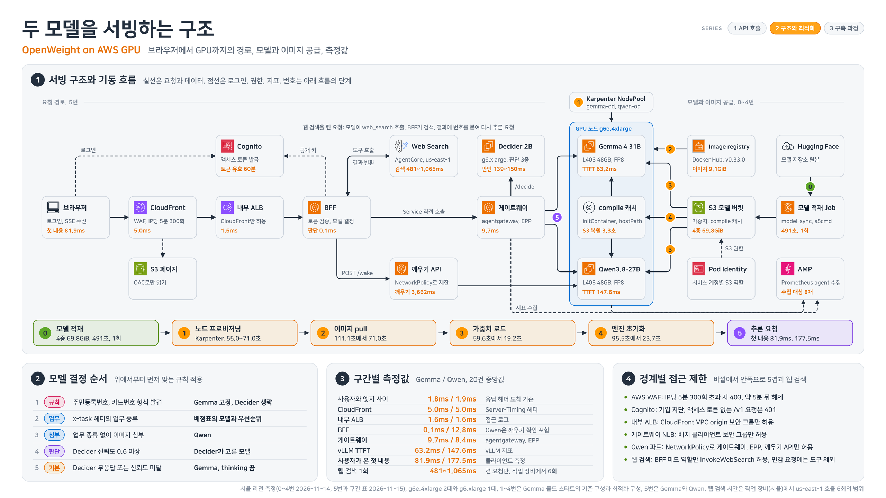
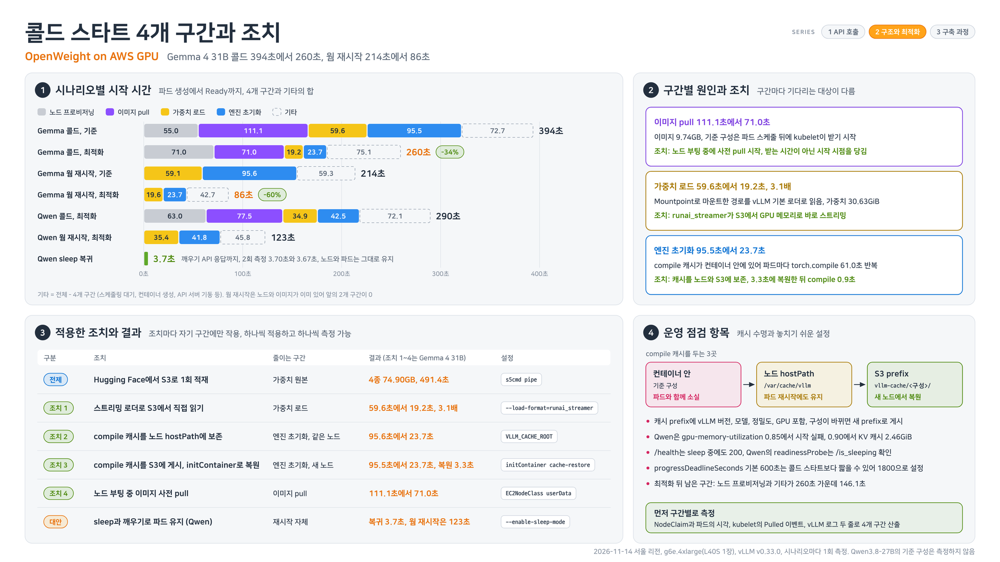
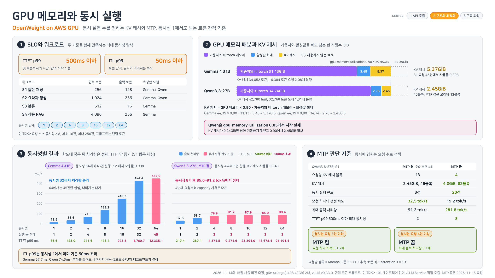
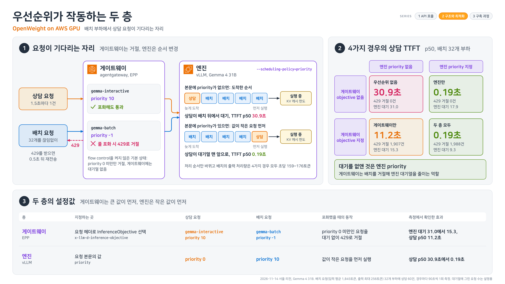
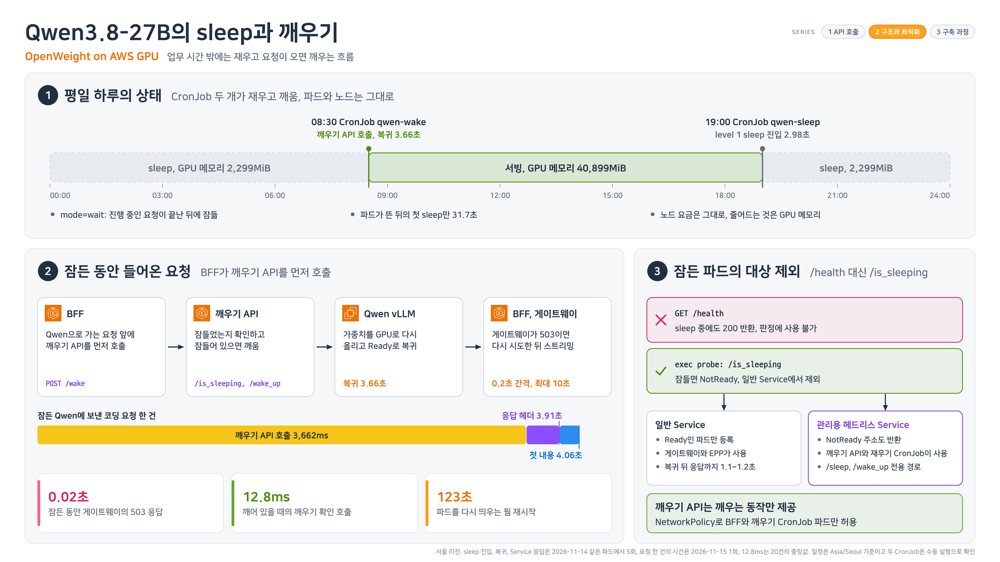
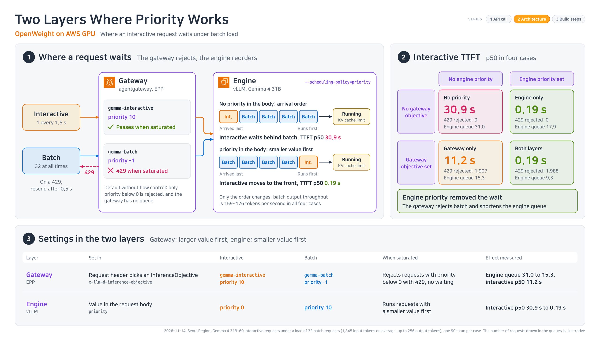
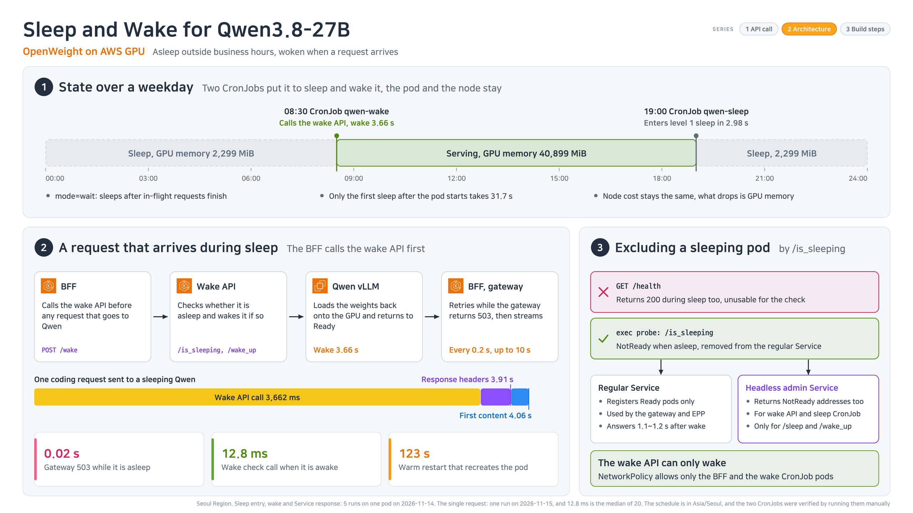

OpenWeight on AWS GPU 2부: 두 모델을 서빙하는 구조와 Amazon EKS 최적화OpenWeight on AWS GPU, Part 2: The architecture for serving two models and Amazon EKS optimizations
오픈 웨이트 모델 두 개를 Amazon EKS에서 직접 서빙하려면 어떤 구성 요소가 필요하고 어디를 최적화해야 할까요? OpenWeight on AWS GPU 시리즈의 2부인 이 글은 전체 구조를 앱, 게이트웨이, 서빙, 모델과 이미지 공급, 노드 관리, 관측의 6개 계층으로 나눠 설명합니다. Amazon EKS 쪽에서 적용한 최적화 4가지로 콜드 스타트는 394초에서 260초가 됐습니다. 배치 부하 중 상담 요청의 첫 토큰까지의 시간은 중앙값 30.9초에서 0.19초가 됐고 잠든 모델은 3.66초 만에 복귀했습니다.Which components does it take to serve two open-weight models yourself on Amazon EKS, and where should you optimize? This post, Part 2 of the OpenWeight on AWS GPU series, explains the whole architecture in six layers: app, gateway, serving, model and image supply, node management and observability. With four optimizations on the Amazon EKS side, the cold start went from 394 s to 260 s. Under batch load the median time to first token of interactive requests went from 30.9 s to 0.19 s, and a sleeping model was back in 3.66 s.
- 구조: 요청은 CloudFront, 내부 ALB, BFF, 게이트웨이를 지나 vLLM에 닿고 가중치는 S3 버킷에서 GPU 노드로 옵니다. 워크로드마다 노드를 따로 두고 GPU NodePool은 GPU 1장으로 묶었습니다.Architecture: a request goes through CloudFront, the internal ALB, the BFF and the gateway to vLLM, and weights reach the GPU nodes from an S3 bucket. Each workload has its own nodes, and each GPU NodePool is capped at one GPU.
- 콜드 스타트: 이미지 사전 pull, runai_streamer, compile 캐시 복원으로 Gemma 4 31B의 콜드 스타트가 394초에서 260초, 웜 재시작이 214초에서 86초가 됐습니다.Cold start: image pre-pull, runai_streamer and a restored compile cache took the cold start of Gemma 4 31B from 394 s to 260 s and the warm restart from 214 s to 86 s.
- 동시 실행: KV 캐시는 Gemma 4 31B에 5.37GiB, Qwen3.8-27B에 2.45GiB가 남습니다. Gemma는 짧은 채팅을 45건까지, Qwen은 MTP를 켜면 3건, 끄면 20건까지 동시에 실행했습니다.Concurrent requests: 5.37 GiB is left for the KV cache of Gemma 4 31B and 2.45 GiB for Qwen3.8-27B. Gemma ran up to 45 short chat requests at once, and Qwen ran 3 with MTP on and 20 with MTP off.
- 우선순위: 배치 부하 중 상담 요청의 TTFT 중앙값은 엔진 우선순위를 켜면 30.9초에서 0.19초가 됐고 게이트웨이 우선순위만으로는 11.2초였습니다.Priority: under batch load the median TTFT of support requests went from 30.9 s to 0.19 s with engine priority, and was 11.2 s with gateway priority alone.
- sleep: 잠든 Qwen3.8-27B는 3.66초 만에 복귀했습니다. 웜 재시작은 123초, 콜드 스타트는 290초이고 sleep 중에도 노드 요금은 그대로입니다.Sleep: a sleeping Qwen3.8-27B was back in 3.66 s. A warm restart takes 123 s and a cold start 290 s, and the node is still charged during sleep.
6개 계층으로 나눈 전체 구조
오픈 웨이트 모델(가중치가 공개되어 내려받아 직접 실행할 수 있는 모델)을 직접 서빙하는 일은 GPU 노드에 추론 엔진을 올리는 것으로 끝나지 않습니다. 요청을 받는 입구, 모델을 고르는 라우팅, 가중치를 GPU까지 옮기는 경로, 노드를 만들고 회수하는 규칙이 함께 있어야 합니다. OpenWeight on AWS GPU(OW on GPU)는 이 구성을 Amazon Elastic Kubernetes Service(Amazon EKS)에서 처음부터 만들어 보는 시리즈입니다. 예로 드는 환경은 오픈 소스 추론 엔진 vLLM으로 Gemma 4 31B와 Qwen3.8-27B를 함께 서빙하며 코드는 ow-on-gpu 저장소에 있습니다.
2부인 이 글은 그 환경의 구조를 설명합니다. 먼저 전체 구성을 6개 계층으로 나눠 구성 요소마다 맡은 일을 봅니다. 이어서 Amazon EKS 쪽에서 적용한 최적화 4가지를 측정한 값과 함께 정리합니다. Gemma 4 31B의 콜드 스타트는 394초에서 260초가 됐습니다. 배치 부하 중 상담 요청의 첫 토큰까지의 시간은 중앙값 30.9초에서 0.19초가 됐고 잠든 Qwen3.8-27B는 3.66초 만에 복귀했습니다.
1부는 API 호출 한 건이 이 구조를 지나는 8개 단계를 따라가고 3부는 같은 환경을 10개 단계로 구축합니다. 본문의 값은 2026년 11월 14일과 15일에 서울 리전(ap-northeast-2)에서 측정했고 반복 횟수는 표마다 적었습니다. Kubernetes와 AWS의 기본 개념(파드, Deployment, IAM 역할)을 알고 LLM 서빙을 처음 구성하는 분을 생각하고 썼습니다.
그림 1은 전체 구조를 한 장에 그린 것입니다. 이 글의 각 절은 이 그림의 한 부분을 확대해 설명합니다.

계층마다 맡은 일
환경은 서울 리전의 Amazon EKS 1.37 클러스터 하나입니다. 구성 요소가 많아 보여도 맡은 일로 묶으면 6개 계층입니다. 계층마다 바꿀 수 있는 설정과 측정할 지표가 다르므로 이 구분을 먼저 익혀 두면 뒤의 절을 읽기 쉽습니다.
| 계층 | 구성 요소 | 맡은 일 |
|---|---|---|
| 앱 | Amazon CloudFront, AWS WAF, Amazon Cognito, 내부 ALB, BFF 파드 2개 | 정적 페이지 제공, 속도 제한, 로그인 토큰 검증, 모델과 우선순위 결정, 도구 실행 |
| 게이트웨이 | agentgateway 파드 2개, 모델별 EPP | 요청 본문의 model 값으로 모델별 풀 선택, 노출 경로 제한, 포화 시 배치 요청 거절 |
| 서빙 | vLLM 파드 2개(Gemma 4 31B, Qwen3.8-27B), Strands Decider 2B | 추론, 요청 처리 순서 결정, 모델 판단 |
| 모델과 이미지 공급 | Amazon S3 모델 버킷, 적재 Job, 캐시 게시 Job | 가중치와 compile 캐시를 GPU 노드까지 전달 |
| 노드 관리 | Karpenter NodePool 6개, 관리형 노드 그룹 1개 | 워크로드별 노드 생성과 회수 |
| 관측 | Prometheus agent, Amazon Managed Service for Prometheus | vLLM, EPP, 게이트웨이의 지표 수집과 저장 |
표 1. 계층별 구성 요소와 맡은 일
그림 1의 왼쪽은 요청 경로입니다. 요청은 Amazon CloudFront, 내부 Application Load Balancer(ALB), BFF, 게이트웨이를 차례로 지나 vLLM에 도착합니다. BFF(Backend for Frontend)는 화면과 모델 사이에서 로그인을 확인하고 요청을 어느 모델로 보낼지 정하는 서비스입니다. 게이트웨이는 BFF가 정한 모델 이름을 보고 요청을 그 모델의 vLLM 파드로 넘깁니다. 인터넷에 열린 곳은 CloudFront 하나이고 나머지는 모두 VPC 안에 있습니다.
그림의 오른쪽은 공급 경로입니다. 모델의 가중치와 컨테이너 이미지가 GPU 노드에 올라가는 길이고 번호 0에서 4의 순서로 진행됩니다. 요청 경로가 응답 속도를 정한다면 공급 경로는 새 파드가 요청을 받기까지의 시간을 정합니다.
주방이 둘인 식당에 비유하면 계층의 역할이 쉽게 나뉩니다. 앱 계층은 입구의 안내 데스크입니다. 예약을 확인하고(로그인) 주문을 어느 주방에 넣을지 정합니다. 게이트웨이는 주문서를 주방별로 나눠 건네는 창구이고 서빙 계층은 화구가 하나씩인 주방 두 곳입니다. 화구가 GPU이고 화구에 한 번에 올릴 수 있는 냄비 수가 뒤에서 볼 KV 캐시입니다. 공급 계층은 식자재 창고와 납품, 노드 관리 계층은 주방 설비를 들이고 빼는 시설 담당, 관측 계층은 주방마다 걸린 계기판입니다. 이 글의 최적화는 모두 주방 쪽 이야기입니다. 새 주방을 여는 시간을 줄이고(콜드 스타트), 화구에 올리는 냄비 수를 정하고(동시 실행), 급한 주문을 먼저 올리고(우선순위), 손님이 없는 시간에는 불만 줄여 둡니다(sleep). 실제 주방과 다른 점도 있습니다. GPU는 여러 요청을 묶어 함께 계산하므로 요청이 늘면 전체 처리량도 늘어납니다(Gemma 4 31B는 동시성 1에서 18.5 tok/s, 32에서 424.4 tok/s).
두 모델의 업무 배정과 데이터 정책
모델을 둘로 나눈 기준은 업무와 데이터입니다. Gemma 4 31B는 고객 요청을, Qwen3.8-27B는 내부 업무를 맡습니다.
| 업무 | 모델 | 우선순위 |
|---|---|---|
| 상담 챗봇(함수 호출로 주문 조회) | Gemma 4 31B | interactive |
| 상품 설명 다국어 번역, 리뷰 요약 | Gemma 4 31B | batch |
| 상품 이미지 속성 추출, 문서 OCR | Qwen3.8-27B | interactive 또는 batch |
| 사내 코딩 에이전트 | Qwen3.8-27B | interactive |
표 2. 업무와 모델 배정. interactive는 사용자가 기다리는 요청이고 batch는 나중에 처리해도 되는 요청입니다
데이터 정책은 한 줄입니다. 개인정보가 든 요청은 Gemma 4 31B로만 보냅니다. 주민등록번호나 카드번호처럼 형식이 정해진 정보는 BFF의 규칙이 먼저 거르고, 형식이 없는 경우의 판단은 Strands Decider 2B가 돕습니다. 이 배정이 뒤에서 볼 두 가지 설계의 근거가 됩니다. 한 모델이 대화형 요청과 배치 요청을 함께 받으므로 우선순위가 필요합니다. 내부 업무용 모델은 업무 시간 밖에 사용하지 않으므로 재울 수 있습니다.
01
워크로드마다 따로 두는 노드
관리형 노드 그룹 1개와 NodePool 6개
이 절은 어떤 워크로드가 어떤 노드에 올라가는지를 설명합니다. GPU 노드는 비싸고 종류가 적어서, 무엇을 GPU 노드에 올리고 무엇을 올리지 않을지를 노드 단위로 나눠 두어야 합니다.
Karpenter는 스케줄되지 못한 파드를 보고 조건에 맞는 EC2 인스턴스를 만드는 노드 프로비저너입니다. NodePool은 Karpenter가 만들 노드의 조건(인스턴스 유형, 용량 유형, taint, 한도)을 적은 리소스입니다. EC2NodeClass는 AMI와 서브넷, 사용자 데이터 같은 AWS 쪽 설정을 적은 리소스입니다. Karpenter 자신이 실행될 노드는 Karpenter가 뜨기 전부터 필요하므로 관리형 노드 그룹으로 만듭니다.
| 노드 묶음 | 인스턴스 | 올라가는 워크로드 | 격리와 한도 |
|---|---|---|---|
관리형 노드 그룹 addons | m7g.large 2대 | Karpenter, CoreDNS, AWS Load Balancer Controller | CriticalAddonsOnly taint |
NodePool system | c7i-flex.xlarge 2대 | 게이트웨이, EPP, 깨우기 API, Prometheus agent, 적재 Job | CPU 32개 한도 |
NodePool app | c7g.large 2대 | BFF 파드 2개 | ow-on-gpu/app taint, CPU 8개 한도 |
NodePool gemma-od | g6e.4xlarge 1대 | Gemma 4 31B | nvidia.com/gpu taint, GPU 1장 한도 |
NodePool qwen-od | g6e.4xlarge 1대 | Qwen3.8-27B | nvidia.com/gpu taint, GPU 1장 한도 |
NodePool decider | g6.xlarge 1대 | Strands Decider 2B | nvidia.com/gpu taint, GPU 1장 한도 |
NodePool bench | 측정할 때만 생성 | 부하 발생기 Job | ow-on-gpu/bench taint, CPU 16개 한도 |
표 3. 노드 묶음과 워크로드(인스턴스는 2026년 11월 16일 기준). Karpenter가 만드는 노드는 모두 On-Demand이고 워크로드는 VPC의 프라이빗 서브넷에 둡니다
게이트웨이와 EPP는 두 모델이 함께 지나는 길목이라 system 노드 2대를 서로 다른 가용 영역에 두고 복제본을 나눠 올렸습니다. BFF는 Graviton 노드를, 부하 발생기는 측정할 때만 뜨는 노드를 따로 사용합니다. 측정 부하가 서빙 경로의 파드와 CPU를 다투지 않게 하려는 구분입니다.
모델마다 한 대로 묶는 GPU NodePool
GPU NodePool은 모델마다 하나입니다. 아래는 Gemma용이고 Qwen용은 이름만 다릅니다.
# k8s/base/nodepools.yaml에서 발췌
apiVersion: karpenter.sh/v1
kind: NodePool
metadata:
name: gemma-od
spec:
template:
spec:
nodeClassRef:
group: karpenter.k8s.aws
kind: EC2NodeClass
name: vllm
requirements:
- key: node.kubernetes.io/instance-type
operator: In
values: ["g6e.4xlarge"]
- key: karpenter.sh/capacity-type
operator: In
values: ["on-demand"]
taints:
- key: nvidia.com/gpu
value: "true"
effect: NoSchedule
limits:
nvidia.com/gpu: 1
disruption:
consolidationPolicy: WhenEmpty
consolidateAfter: 30m이 매니페스트에서 볼 설정은 3곳입니다.
limits의nvidia.com/gpu: 1은 이 NodePool이 만드는 GPU를 한 장으로 묶습니다. Karpenter 문서에 따르면 한도를 넘은 NodePool은 새 노드를 만들지 않습니다. 복제본 수를 실수로 올려도 GPU 노드가 늘지 않습니다.taints는 이 taint를 허용하지 않는 파드가 GPU 노드에 스케줄되지 않게 합니다. vLLM 파드는 같은 키의 toleration과karpenter.sh/nodepoolnodeSelector로 자기 NodePool을 고릅니다.consolidationPolicy: WhenEmpty는 워크로드 파드가 없는 노드만 30분 뒤에 회수합니다. 파드를 다시 띄우는 동안 노드가 남아 있어야 뒤에서 볼 웜 재시작이 됩니다.
가용 영역 조건은 두지 않아 Karpenter가 용량이 있는 영역을 고릅니다. 조회 시점에 g6e.4xlarge는 서울 리전의 가용 영역 4곳 가운데 ap-northeast-2a와 ap-northeast-2b에서만 제공됐습니다.
g6e.4xlarge와 FP8 체크포인트
g6e.4xlarge에는 NVIDIA L40S가 한 장 있습니다. vCPU 16개, 메모리 128GiB, 인스턴스 스토어 600GB이고 GPU 메모리는 제품 페이지 표기로 48GB입니다. vLLM의 기동 로그에 기록된 값은 44.39GiB였습니다.
GPU 세대가 체크포인트의 형식을 정합니다. FP8은 가중치를 8비트 부동소수점으로 줄인 양자화 형식입니다. L40S는 Ada 세대(compute capability 8.9)이고 vLLM 문서의 양자화 지원표에서 llm-compressor FP8은 Ada와 Hopper에서 지원됩니다. 그래서 두 모델 모두 FP8-dynamic 체크포인트를 사용했습니다.
| 모델 | 체크포인트 | 가중치 파일 | GPU에 올라간 크기 |
|---|---|---|---|
| Gemma 4 31B | RedHatAI/gemma-4-31B-it-FP8-dynamic | 33.27GB | 30.63GiB |
| Qwen3.8-27B | AzatAI/Qwen3.8-27B-FP8-dynamic | 36.78GB | 34.39GiB |
표 4. 두 모델의 체크포인트. 파일 크기는 1GB = 10^9바이트 기준이고 GPU에 올라간 크기는 vLLM 로그의 Model loading took 값입니다
Qwen3.8-27B에는 가중치가 5.9GB 작은 공식 block FP8 체크포인트도 있습니다. 다만 vLLM v0.33.0 소스에서 block FP8용 CUTLASS 커널은 compute capability 9.0 이상에서만 지원됩니다. 그래서 문서가 Ada 지원을 명시한 per-channel 체크포인트를 골랐고 L40S에서 block FP8이 어떻게 동작하는지는 확인하지 않았습니다. 다른 GPU를 사용한다면 체크포인트를 고르기 전에 그 세대가 지원하는 양자화 형식부터 확인하는 것을 권고합니다.
02
모델과 이미지가 GPU 노드에 오는 경로
S3에 한 번 올리고 S3에서만 읽는 가중치
이 절은 30GiB가 넘는 가중치가 어디에 있고 어떤 권한으로 GPU 노드에 오는지를 설명합니다. 원칙은 하나입니다. 서빙 파드는 Hugging Face에서 내려받지 않고 Amazon Simple Storage Service(Amazon S3) 버킷에서만 읽습니다. 외부 저장소의 속도와 가용성이 서빙 파드의 시작에 영향을 주지 않게 하려는 구성입니다.
적재 Job이 리비전 해시로 고정한 저장소 4개를 버킷에 한 번 올립니다. 파일을 받는 대로 s5cmd pipe로 올려 로컬 디스크에 쌓지 않고, 받으면서 계산한 해시를 Hugging Face가 알려 준 값과 비교합니다. 2026년 11월 14일에 객체 73개, 74.90GB(69.8GiB)를 올리는 데 전송과 검증이 491.4초 걸렸습니다. 버킷의 구조는 다음과 같이 나눴습니다.
s3://<bucket>/models/gemma-4-31B-it-FP8-dynamic/
s3://<bucket>/models/Qwen3.8-27B-FP8-dynamic/
s3://<bucket>/models/strands-decider-2B-qwen3.5-v1-2610/
s3://<bucket>/models/Qwen3.5-2B-Base/
s3://<bucket>/vllm-cache/v0.33.0-gemma4-31b-fp8-l40s/
s3://<bucket>/vllm-cache/v0.33.0-qwen38-27b-fp8-l40s/models/에는 가중치가, vllm-cache/에는 뒤에서 설명할 compile 캐시가 들어갑니다. Decider의 저장소에는 어댑터와 헤드만 있어 기반 모델(Qwen3.5-2B-Base)을 함께 올렸습니다.
권한은 EKS Pod Identity로 줍니다. EKS Pod Identity는 AWS Identity and Access Management(IAM) 역할을 Kubernetes ServiceAccount에 연결해 파드에 임시 자격 증명을 주는 기능입니다. 역할은 읽기와 쓰기로 나눴습니다. 읽기 역할은 서빙 파드의 ServiceAccount 3개(gemma, qwen, decider)에, 쓰기 역할은 적재 Job과 캐시 게시 Job에만 연결했습니다. 서빙 파드는 버킷에 아무것도 올리지 못하고 매니페스트에는 자격 증명이 없습니다. 버킷까지의 트래픽은 VPC의 S3 게이트웨이 엔드포인트를 지납니다.
GPU 노드의 디스크와 이미지
vLLM 이미지(vllm/vllm-openai:v0.33.0)는 9.74GB입니다. GPU 노드의 EC2NodeClass는 이 이미지를 받을 자리와 받는 시점을 정합니다.
# k8s/base/ec2nodeclasses.yaml에서 발췌(주석과 일부 필드 생략)
apiVersion: karpenter.k8s.aws/v1
kind: EC2NodeClass
metadata:
name: vllm
spec:
amiSelectorTerms:
- alias: al2023@v20261107
instanceStorePolicy: RAID0
userData: |
#!/bin/bash
systemd-run --unit=prepull-vllm --no-block /bin/bash -c '
until ctr --namespace k8s.io version >/dev/null 2>&1; do sleep 1; done
ctr --namespace k8s.io images pull docker.io/vllm/vllm-openai:v0.33.0
'amiSelectorTerms의 별칭은 EKS 최적화 AL2023 AMI의 릴리스를 고정하고 GPU 노드에는 NVIDIA 드라이버가 든 변형이 올라옵니다. instanceStorePolicy: RAID0은 인스턴스 스토어를 kubelet과 containerd의 저장 공간으로 사용하게 합니다. GPU 노드에서는 559GB가 마운트됐고 이미지가 여기에 저장됐습니다. userData의 스크립트는 노드가 뜨는 동안 이미지를 미리 받기 시작합니다. 이 사전 pull의 효과는 다음 절에서 봅니다.
가중치와 compile 캐시를 받는 vLLM 파드
Gemma의 Deployment에서 공급 경로와 관련된 부분만 옮겼습니다.
# k8s/gemma/deployment.yaml에서 발췌
initContainers:
- name: cache-restore
image: vllm/vllm-openai:v0.33.0
command: ["python3", "/scripts/cache-restore.py"]
env:
- name: CACHE_PREFIX
value: vllm-cache/v0.33.0-gemma4-31b-fp8-l40s
containers:
- name: vllm
image: vllm/vllm-openai:v0.33.0
args:
- s3://$(MODEL_BUCKET)/models/gemma-4-31B-it-FP8-dynamic
- --load-format=runai_streamer
- --gpu-memory-utilization=0.90
env:
- name: VLLM_CACHE_ROOT
value: /vllm-cache
- name: HF_HUB_OFFLINE
value: "1"
volumes:
- name: vllm-cache
hostPath:
path: /var/cache/vllm모델 인자가 s3:// 경로이고 로더가 runai_streamer입니다. vLLM 문서에 따르면 Run:ai Model Streamer는 텐서를 동시에 읽으면서 GPU 메모리로 스트리밍하는 라이브러리입니다. 가중치를 노드의 디스크에 먼저 내려받는 단계가 없습니다. HF_HUB_OFFLINE=1은 설정이 틀렸을 때 파드가 조용히 Hugging Face에서 받아 오는 일을 막습니다. initContainer(초기화 컨테이너) cache-restore는 S3의 compile 캐시를 노드의 hostPath로 내려받습니다.
03
콜드 스타트 394초를 260초로 줄인 3가지 조치
4개 구간으로 나눠 측정한 결과
GPU 노드에서 서빙 파드를 새로 띄우면 요청을 받기까지 몇 분이 걸립니다. 노드를 줄였다 늘리거나 장애 뒤에 복구할 때 이 시간이 그대로 서비스 공백이 됩니다. 새 노드에서 시작하는 경우를 콜드 스타트(Cold start), 같은 노드에서 파드만 다시 띄우는 경우를 웜 재시작(Warm restart)이라고 부르겠습니다.
파드 생성부터 Ready까지의 시간을 4개 구간과 나머지(기타)로 나눴습니다. 구간마다 기다리는 대상이 다르므로 줄이는 방법도 다릅니다. 기준 구성은 최적화를 적용하기 전의 구성이고 최적화 구성이 지금 서빙에 사용하는 구성입니다.
| 구간 | 측정 근거 | 기준 구성 | 최적화 구성 | 기준 | 최적화 |
|---|---|---|---|---|---|
| 노드 프로비저닝 | NodeClaim 생성부터 노드의 Ready까지 | Karpenter가 g6e.4xlarge를 만듦 | 같음 | 55.0 | 71.0 |
| 이미지 pull | kubelet의 Pulled 이벤트 | 파드가 스케줄된 뒤 받기 시작 | 노드가 뜨는 동안 받기 시작 | 111.1 | 71.0 |
| 가중치 로드 | vLLM 로그의 Model loading took | Mountpoint for Amazon S3로 마운트한 경로를 기본 로더로 읽음 | s3:// 경로를 runai_streamer로 스트리밍 | 59.6 | 19.2 |
| 엔진 초기화 | vLLM 로그의 init engine ... took | compile 캐시가 컨테이너 안에 생기고 파드와 함께 사라짐 | S3의 compile 캐시를 hostPath로 복원 | 95.5 | 23.7 |
| 기타 | 전체에서 위 4개 구간을 뺀 값 | 72.7 | 75.1 | ||
| 합계 | 파드 생성부터 Ready까지 | 394 | 260 |
표 5. Gemma 4 31B 콜드 스타트의 구간별 시간(초, 2026년 11월 14일, 구성마다 한 번). 로더를 뺀 엔진 플래그와 모델, vLLM 버전은 두 구성이 같습니다
| 시나리오 | Gemma 4 31B | Qwen3.8-27B |
|---|---|---|
| 콜드 스타트, 기준 구성 | 394초 | 측정하지 않음 |
| 콜드 스타트, 최적화 구성 | 260초 | 290초 |
| 웜 재시작, 기준 구성 | 214초 | 측정하지 않음 |
| 웜 재시작, 최적화 구성 | 86초 | 123초 |
표 6. 시나리오별 파드 생성부터 Ready까지의 시간(2026년 11월 14일, 시나리오마다 한 번)
Gemma 4 31B의 콜드 스타트는 134초(34%), 웜 재시작은 128초(60%) 줄었습니다. 그림 2는 시나리오별 구간과 구간마다 적용한 조치를 함께 보여 줍니다.

구간마다 다른 3가지 조치
이미지 사전 pull은 받는 시간을 줄이지 않고 받기 시작하는 시점을 당깁니다. 기준 구성에서는 파드가 스케줄된 뒤에야 kubelet이 9.74GB 이미지를 받기 시작합니다. 최적화 구성에서는 노드의 사용자 데이터가 containerd가 뜨자마자 받기 시작하고 kubelet은 진행 중인 다운로드를 이어받습니다. kubelet이 기다린 시간은 111.1초에서 71.0초가 됐습니다. 새 노드가 자주 뜨는 환경에서 적용할 만합니다.
스트리밍 로더는 가중치 로드를 59.6초에서 19.2초로 줄였습니다(3.1배). 웜 재시작에서도 59.1초와 19.6초여서 이 구간은 노드가 새것인지와 무관했습니다. 가중치를 S3에 두고 있다면 --load-format=runai_streamer와 s3:// 경로, Pod Identity 권한으로 적용합니다. Run:ai Model Streamer가 boto3의 자격 증명을 사용하도록 RUNAI_STREAMER_NO_BOTO3_SESSION=0을 함께 설정했습니다.
compile 캐시는 엔진 초기화를 95.5초에서 23.7초로 줄였습니다. vLLM은 요청을 받기 전에 torch.compile을 끝내므로 컴파일 시간이 시작 시간에 그대로 들어갑니다. 차이의 대부분이 이 컴파일입니다(61.0초에서 0.9초). 캐시는 두 곳에 둡니다. 노드의 hostPath에 두면 같은 노드에서 파드가 다시 뜰 때 남아 있고, S3에 게시해 두면 새 노드에서 initContainer가 복원합니다. Gemma 4 31B의 캐시는 객체 522개, 90.8MB였고 복원에 3.3초가 걸렸습니다.
캐시를 운영할 때 지킬 규칙이 하나 있습니다. S3 prefix 이름에 vLLM 버전, 모델, 정밀도, GPU를 넣고 하나라도 바뀌면 새 prefix로 다시 게시합니다. 2026년 11월 15일에 Qwen의 플래그 하나를 바꿔 띄웠을 때 기존 캐시가 맞지 않아 compile에 62.6초가 걸렸습니다.
최적화 뒤에 남은 것은 노드 프로비저닝과 기타이고 260초 가운데 146.1초입니다. 노드 프로비저닝은 같은 날에도 55초에서 118초까지 달랐습니다. 이 글의 값을 예상치로 사용하기보다 같은 근거(NodeClaim과 파드의 시각, kubelet의 Pulled 이벤트, vLLM 로그 두 줄)로 직접 측정하는 것을 권고합니다.
04
GPU 메모리가 정하는 동시 실행 수
가중치를 빼고 남는 KV 캐시
파드가 Ready가 된 뒤에는 GPU 한 장이 요청을 동시에 몇 건 실행하는지가 용량을 정합니다. 그 수를 정하는 것이 KV 캐시입니다. KV 캐시(Key-Value cache)는 이미 처리한 토큰의 계산 결과를 GPU 메모리에 보관해 다음 토큰을 만들 때 다시 계산하지 않게 하는 공간입니다. 실행 중인 요청마다 자리를 차지하므로 KV 캐시가 차면 다음 요청은 기다립니다.
vLLM은 --gpu-memory-utilization으로 정한 비율만큼 GPU 메모리를 사용하고 가중치와 실행에 필요한 메모리를 뺀 나머지를 KV 캐시로 미리 잡습니다.
KV 캐시 메모리 = GPU 메모리 × gpu-memory-utilization - 가중치와 비 torch 메모리 - 활성값 최대
Gemma: 44.39 × 0.90 - 31.13 - 3.45 = 5.37 GiB
Qwen: 44.39 × 0.90 - 34.74 - 2.76 = 2.45 GiB48GB GPU에 30GiB대 체크포인트를 올리면 KV 캐시로 남는 메모리는 한 자릿수 GiB입니다. Qwen3.8-27B는 처음 값인 0.85에서 KV 캐시가 0.24GiB만 남아 엔진이 시작하지 못했고 0.90으로 올려서야 시작했습니다. 가중치가 GPU 메모리의 대부분을 차지하는 구성에서는 이 값이 시작 성공 여부까지 정합니다.
Gemma 4 31B는 KV 캐시에 들어가는 만큼 실행
이 환경의 SLO(서비스 수준 목표)는 두 가지입니다. TTFT(Time To First Token)는 요청을 보내고 첫 토큰을 받기까지의 시간이고 p99가 500ms 이하여야 합니다. ITL(Inter-Token Latency)은 스트리밍으로 오는 응답 조각 사이의 간격이고 p99가 50ms 이하여야 합니다. 부하는 게이트웨이를 거치지 않고 vLLM Service에 직접 보냈고 동시성을 1에서 64까지 7단계로 올렸습니다.
| 워크로드 | 입력, 출력 토큰 | 동시 실행 한도 | 최대 출력 처리량 | TTFT p99 500ms 이하인 최대 동시성 |
|---|---|---|---|---|
| S1 짧은 채팅 | 256, 128 | 45건 | 447.0 tok/s | 8 |
| S2 요약과 생성 | 1,024, 256 | 12건 | 164.7 tok/s | 1 |
| S3 분류 | 512, 16 | 24건 | 114.7 tok/s | 4 |
| S4 장문 RAG | 4,096, 256 | 7건 | 81.8 tok/s | 없음 |
표 7. Gemma 4 31B의 워크로드별 결과(2026년 11월 14일, 랜덤 토큰 프롬프트, 단계마다 한 번). 동시 실행 한도는 동시성 64에서 엔진이 실제로 실행한 요청 수입니다
요청이 길수록 한 건이 KV 캐시를 많이 차지해 동시에 실행되는 수가 줄어듭니다. 한도에 닿은 뒤에는 동시성을 올려도 처리량이 늘지 않고 TTFT만 길어집니다. S2는 동시성 16, 32, 64에서 처리량이 163.6, 164.7, 164.0 tok/s로 같았고 TTFT p99는 19초, 38초, 91초로 늘었습니다.
ITL은 부하와 무관하게 기준을 넘었습니다. 요청을 하나씩 보낸 동시성 1에서도 ITL p99가 57.6ms에서 58.6ms였고 중앙값이 54.0ms였습니다. 토큰 하나를 만드는 54ms는 L40S에서 이 체크포인트가 내는 속도입니다. 부하를 줄여서 나아지는 것은 TTFT이고 ITL 기준을 지키려면 GPU나 체크포인트를 바꾸거나 기준을 다시 정해야 합니다.
Qwen3.8-27B의 동시 3건 한도와 MTP
Qwen3.8-27B는 부하를 올려도 요청을 동시에 3건만 실행했습니다. 원인은 MTP(Multi-Token Prediction)입니다. MTP는 모델의 예측 헤드로 다음 토큰 여러 개를 미리 추측하고 본 모델이 한 번에 검증해 요청 하나의 속도를 올리는 방식입니다. vLLM v0.33.0 소스의 블록 계산에 따르면 추측 토큰 3개가 요청마다 잡는 상태 블록을 4배로 늘립니다. 요청 하나가 13블록을 잡고 KV 캐시 2.45GiB는 46블록이어서 3건에서 멈춥니다. MTP를 끄면 요청 하나가 4블록을 잡습니다.
| 항목 | MTP 켬(추측 토큰 3개) | MTP 끔 |
|---|---|---|
| 요청당 KV 캐시 블록 | 13 | 4 |
| KV 캐시 | 2.45GiB, 46블록 | 4.0GiB, 82블록 |
| 동시 실행 한도 | 3건 | 20건 |
| 요청 하나의 생성 속도(동시성 1) | 32.5 tok/s | 19.2 tok/s |
| 최대 출력 처리량 | 91.2 tok/s | 281.8 tok/s |
| TTFT p99 500ms 이하인 최대 동시성 | 2 | 8 |
표 8. Qwen3.8-27B, S1에서 MTP를 켠 구성(2026년 11월 14일)과 끈 구성(2026년 11월 15일). 랜덤 토큰 프롬프트, 각각 한 번 측정
MTP는 요청 하나의 속도를 1.7배로 올리는 대신 동시 실행 수를 3으로 묶습니다. 그래서 선택 기준은 동시에 겹치는 요청 수입니다. 요청이 3건을 넘지 않는 업무라면 켜는 쪽이, 사내 코딩 에이전트처럼 4건 이상 겹치는 업무라면 끄는 쪽이 유리합니다. 랜덤 토큰 프롬프트로 한 번 측정한 값이므로 실제 워크로드에서는 추측이 맞는 비율에 따라 속도 차이가 달라집니다.

용량을 볼 때는 기동 로그의 KV 캐시 크기만 보지 않는 것을 권고합니다. 엔진 지표의 실행 중 요청 수(vllm:num_requests_running)와 KV 캐시 사용률(vllm:kv_cache_usage_perc)을 함께 봅니다. Qwen의 한도는 로그의 토큰 수로는 알 수 없었고 이 두 지표에서 드러났습니다.
05
본문의 model 값으로 풀을 고르는 게이트웨이
InferencePool, EPP, agentgateway
게이트웨이 계층은 요청을 모델에 맞는 vLLM 파드로 넘기는 층입니다. 모델이 둘이므로 엔드포인트도 둘로 나눌 수 있지만, 이 환경은 엔드포인트를 하나로 두고 게이트웨이가 요청마다 모델을 가립니다. 클라이언트와 BFF는 주소 하나만 알면 되고 모델을 늘릴 때는 경로 규칙만 더합니다.
Gateway API Inference Extension(GAIE)은 Kubernetes Gateway API에 추론 워크로드용 리소스를 더하는 프로젝트입니다. InferencePool은 같은 모델을 서빙하는 파드의 묶음이고 HTTPRoute의 백엔드가 됩니다. EPP(Endpoint Picker)는 풀 안에서 요청을 받을 파드를 고르는 구성 요소입니다. agentgateway는 이 리소스를 읽어 실제로 트래픽을 넘기는 게이트웨이 구현체입니다.
| 구성 요소 | 버전 | 이 환경에서 하는 일 |
|---|---|---|
| Gateway API CRD | v1.6.3 | Gateway, HTTPRoute |
| GAIE CRD | v1.6.2 | InferencePool |
| llm-d-router | v1.0.0 | 풀마다 EPP 2개, InferenceObjective |
| agentgateway | v1.7.0 | 게이트웨이 파드 2개, 본문 기반 라우팅 |
| AWS Load Balancer Controller | v3.6.3 | 게이트웨이 앞의 내부 NLB, BFF 앞의 내부 ALB |
표 9. 게이트웨이 계층의 구성 요소와 버전(2026년 11월 14일 기준)
GAIE v1.6.0 릴리스 노트에 따르면 이 버전부터 EPP와 InferenceObjective가 llm-d 프로젝트로 옮겨졌습니다. 그래서 InferencePool CRD만 GAIE에서 설치하고 EPP와 InferenceObjective는 llm-d-router에서 설치했습니다. 이 환경은 풀마다 vLLM 파드가 하나라서 EPP가 고를 대상이 하나뿐이고 EPP의 스케줄링 시간은 요청당 0.03ms였습니다. 여기서 EPP가 실제로 하는 일은 풀이 포화했는지 판단해 우선순위가 낮은 요청을 거절하는 것입니다.
헤더로 옮긴 model 값과 정확히 일치하는 경로
OpenAI 호환 API에서 모델 이름은 URL이 아닌 요청 본문에 있습니다. 경로와 헤더로 백엔드를 고르는 HTTPRoute만으로는 두 모델을 가를 수 없으므로 라우팅 전에 본문의 model 값을 헤더로 옮깁니다. agentgateway 문서에 따르면 이 일은 AgentgatewayPolicy 하나로 처리합니다.
# k8s/gateway/gateway.yaml에서 발췌(주석 생략)
apiVersion: agentgateway.dev/v1alpha1
kind: AgentgatewayPolicy
metadata:
name: model-routing
spec:
targetRefs:
- group: gateway.networking.k8s.io
kind: Gateway
name: inference-gateway
traffic:
phase: PreRouting
transformation:
request:
set:
- name: X-Gateway-Base-Model-Name
value: 'request.method == "GET" ? default(request.headers["x-model"], "") : string(json(request.body).model)'HTTPRoute는 이 헤더와 경로가 모두 정확히 맞는 요청만 풀로 보냅니다. 등록한 경로는 /v1/chat/completions와 /v1/models 둘이고 경로 일치 방식은 Exact입니다. Qwen 파드의 8000 포트에는 추론 API와 함께 /sleep, /wake_up 같은 관리 엔드포인트가 열려 있습니다. 등록한 경로만 통과시키므로 이 엔드포인트로 가는 요청은 게이트웨이에서 404로 끝납니다. 클라이언트가 헤더를 직접 넣어도 본문의 값이 덮어쓰므로 헤더를 위조해 다른 풀을 고를 수도 없습니다.
게이트웨이와 EPP가 멈추면 두 모델 모두 응답하지 못합니다. 그래서 게이트웨이 파드 2개를 서로 다른 가용 영역에 두었습니다. topologySpreadConstraints만으로는 분산이 걸리지 않았고 minDomains: 2와 matchLabelKeys: [pod-template-hash]를 함께 두자 두 파드가 다른 영역에 배치됐습니다. EPP는 풀마다 2개이고 리더 하나가 요청을 처리합니다.
게이트웨이로 들어오는 길은 둘입니다. BFF는 클러스터 안의 Service를 직접 호출하고 배치 작업은 게이트웨이 앞의 내부 Network Load Balancer(NLB)로 들어옵니다. 두 길 모두 같은 라우팅 규칙을 지납니다. 2026년 11월 15일에 요청을 하나씩 보낸 측정에서 게이트웨이 구간의 중앙값은 Gemma 4 31B 9.7ms, Qwen3.8-27B 8.4ms였습니다(모델마다 20건).
06
배치 부하에서 상담 요청을 지키는 두 층의 우선순위
Gemma 4 31B는 사용자가 기다리는 상담 요청과 나중에 처리해도 되는 번역, 요약 요청을 함께 받습니다. 배치 요청이 KV 캐시를 채우고 있으면 상담 요청은 그 뒤에서 기다립니다. 이 구성에서 우선순위를 지정하는 곳은 두 군데입니다.
- 게이트웨이:
InferenceObjective에 priority를 정의하고 요청은x-llm-d-inference-objective헤더로 그 이름을 고릅니다. llm-d의 flow control 문서에 따르면 기본 상태에서는 풀이 포화했을 때 priority가 0보다 낮은 요청을 HTTP 429로 거절합니다. - 엔진: vLLM을
--scheduling-policy=priority로 실행하고 요청 본문의priority로 지정합니다. vLLM의 스케줄러 설정 문서에 따르면 값이 작을수록 먼저 처리합니다.
두 값은 방향이 반대입니다. 상담 요청은 게이트웨이에서 priority 10인 objective를, 엔진에서는 priority 0을 받습니다. 배치 요청은 각각 -1과 10입니다. 클라이언트는 이 값을 몰라도 됩니다. BFF가 업무 종류에 따라 헤더와 본문의 값을 함께 채웁니다.
# k8s/gemma/routes.yaml에서 발췌(주석 생략). Qwen에도 같은 두 개가 있습니다.
apiVersion: llm-d.ai/v1
kind: InferenceObjective
metadata:
name: gemma-interactive
spec:
priority: 10
poolRefs:
- name: gemma
---
apiVersion: llm-d.ai/v1
kind: InferenceObjective
metadata:
name: gemma-batch
spec:
priority: -1
poolRefs:
- name: gemma어느 쪽이 효과가 있는지 4가지 경우로 나눠 측정했습니다. 배치 요청 32개를 끊임없이 보내 KV 캐시를 채운 상태에서 상담 요청을 1.5초마다 하나씩 60건 보냈습니다.
| 경우 | 상담 TTFT p50 | p90 | 배치 429 거절 | 엔진의 대기 요청 수(평균) |
|---|---|---|---|---|
| 우선순위 없음 | 30,895ms | 39,154ms | 0건 | 31.0 |
| 게이트웨이만 | 11,183ms | 23,081ms | 1,907건 | 15.3 |
| 엔진만 | 190ms | 1,244ms | 0건 | 17.9 |
| 둘 다 | 193ms | 1,030ms | 1,988건 | 9.3 |
표 10. 배치 부하 중 상담 요청의 TTFT와 배치 처리 결과(Gemma 4 31B, 2026년 11월 14일, 경우마다 90초씩 한 번). 요청은 모두 게이트웨이를 거쳤습니다

상담 요청의 대기를 없앤 것은 엔진 우선순위입니다. TTFT 중앙값이 30.9초에서 0.19초가 됐습니다. 게이트웨이는 배치 요청을 거절해 엔진의 대기열을 줄였지만 이미 엔진에 들어간 배치 요청 뒤에서 기다리는 것은 그대로여서 11.2초였습니다. 배치의 출력 처리량은 4가지 경우 모두 초당 159토큰에서 176토큰이었습니다. 우선순위는 처리 순서를 바꾸고 전체 처리량은 바꾸지 않습니다.
한 모델이 대화형 요청과 배치 요청을 함께 받는다면 엔진 우선순위부터 켜는 것을 권고합니다. 적용할 때 볼 점이 두 가지 있습니다. 배치 클라이언트는 429를 받으므로 재시도 간격을 늘리는 처리가 필요합니다. 엔진 우선순위를 켜도 p90은 1.2초였습니다. 이 측정은 Gemma 4 31B로만 했습니다.
07
업무 시간 밖의 Qwen3.8-27B를 재우는 sleep
내부 업무용인 Qwen3.8-27B는 업무 시간 밖에는 요청이 거의 없습니다. 파드를 내리면 다시 띄우는 데 2분 넘게 걸리므로 내리지 않고 재웁니다. vLLM의 sleep mode는 파드를 그대로 둔 채 모델을 GPU에서 내리는 기능입니다. vLLM 문서에 따르면 level 1 sleep은 가중치를 호스트 메모리로 옮기고 KV 캐시를 비웁니다. 이 환경에서 GPU 메모리 사용량은 40,899MiB에서 2,299MiB로 줄었습니다.
| 다시 요청을 받는 방법 | 걸린 시간 | 남아 있는 것 |
|---|---|---|
| sleep에서 복귀 | 3.66초 | 노드, 파드, 호스트 메모리의 가중치 |
| 웜 재시작(같은 노드에서 파드를 다시 띄움) | 123초 | 노드, 이미지, 노드의 compile 캐시 |
| 콜드 스타트(새 노드) | 290초 | S3의 가중치와 compile 캐시 |
표 11. Qwen3.8-27B가 다시 요청을 받기까지의 시간(2026년 11월 14일). 복귀는 같은 파드에서 5회 반복한 값의 최대이고 나머지는 한 번 측정한 값입니다
구성은 표 12와 같습니다.
| 객체 | 내용 |
|---|---|
CronJob qwen-sleep | 평일 19:00(Asia/Seoul)에 /sleep?level=1&mode=wait 호출 |
CronJob qwen-wake | 평일 08:30(Asia/Seoul)에 깨우기 API 호출 |
Deployment qwen-wake-api | POST /wake만 제공. 잠들어 있으면 /wake_up 호출. 복제본 2개 |
Service vllm-qwen-admin | 관리 요청용 헤드리스 Service. NotReady 파드의 주소도 돌려줌 |
| NetworkPolicy 2개 | Qwen의 8000 포트와 깨우기 API의 8080 포트에 정해진 파드만 허용 |
표 12. Qwen3.8-27B의 sleep 운영 구성

구성할 때 놓치기 쉬운 설정이 3가지 있습니다.
- 재울 때는
mode=wait를 줍니다. 진행 중인 요청이 끝난 뒤에 잠듭니다. 기본값abort는 진행 중인 요청을 중단합니다. - readinessProbe는
/health가 아닌/is_sleeping을 확인합니다./health는 잠든 동안에도 200을 돌려주므로 그대로 두면 잠든 파드가 요청을 받습니다. - 관리 엔드포인트는
VLLM_SERVER_DEV_MODE=1로 열립니다. 게이트웨이의 경로 규칙에 등록하지 않고 NetworkPolicy로 닿을 수 있는 파드를 제한했습니다.
잠든 동안 요청이 오면 BFF가 깨웁니다. BFF는 Qwen으로 갈 요청마다 깨우기 API를 먼저 호출합니다. 2026년 11월 15일에 잠든 Qwen에 요청을 한 번 보냈을 때 첫 내용까지 4.06초가 걸렸습니다. 깨어 있을 때 이 호출은 중앙값 12.8ms였습니다(20건).
sleep을 적용하기 전에 확인할 조건이 두 가지 있습니다. sleep은 노드를 그대로 두므로 노드 요금은 줄지 않고 줄어드는 것은 GPU 메모리 사용량입니다. 요금을 줄이려면 노드를 회수해야 하고 그때는 콜드 스타트 290초를 받아들여야 합니다. 또 가중치가 호스트 메모리에 남으므로 노드의 시스템 메모리가 넉넉해야 합니다. sleep을 한 번 거친 뒤 컨테이너 메모리는 60.4GiB였고 g6e.4xlarge의 메모리는 128GiB입니다.
08
Decider 2B와 Web Search가 놓인 자리
구조도에는 추론 모델 말고도 요청을 돕는 구성 요소가 둘 있습니다. 어디에 놓였는지만 정리하고 요청마다의 동작은 1부에서 다룹니다.
Strands Decider 2B는 요청을 읽고 어느 모델이 받아야 할지 판단하는 작은 모델입니다. g6.xlarge 노드 한 대에서 실행하고 게이트웨이의 /decide 경로로 호출합니다. InferencePool을 사용하지 않고 HTTPRoute가 Service로 바로 보냅니다. 어댑터와 기반 모델은 두 추론 모델과 같은 S3 버킷에서 받습니다. BFF는 규칙으로 모델이 정해지지 않는 요청만 Decider 2B에 묻습니다. BFF가 측정한 판단 왕복은 139.4ms에서 150.0ms였습니다(2026년 11월 15일, 4건).
Amazon Bedrock AgentCore Web Search는 BFF가 실행하는 도구입니다. 추론은 그대로 두 모델이 하고 검색만 이 API가 합니다. 그래서 게이트웨이와 vLLM의 구성은 바꾸지 않았습니다. 이 API는 서울 리전에서 제공되지 않아 us-east-1을 호출합니다. 검색어가 리전 밖으로 나가므로 민감 정보가 있는 요청에는 도구를 넣지 않습니다. 권한은 BFF 파드의 ServiceAccount에 연결한 역할 하나이고 bedrock-agentcore:InvokeWebSearch만 허용합니다.
09
경계마다 좁힌 접근과 권한
구성 요소 사이의 경계마다 허용하는 출발지를 정했습니다. 인터넷에서 닿는 곳은 CloudFront뿐이고 안쪽으로 갈수록 허용 대상이 좁아집니다.
| 대상 | 허용하는 출발지 | 수단 |
|---|---|---|
| CloudFront | IP당 5분 300회까지. /v1/* 요청은 BFF가 Amazon Cognito 액세스 토큰을 검증 | AWS WAF 속도 기반 규칙, 토큰 검증 |
| 내부 ALB(80) | CloudFront VPC origin의 보안 그룹 | 보안 그룹 |
| BFF 파드(8080) | 내부 ALB에 연결된 백엔드 보안 그룹 | 보안 그룹 |
| 게이트웨이 내부 NLB(80) | 배치 클라이언트의 보안 그룹 | 보안 그룹 |
| 깨우기 API 파드(8080) | BFF 파드, 깨우기 CronJob의 파드 | NetworkPolicy |
| Qwen 파드(8000) | 게이트웨이, EPP, 깨우기 API, 지표 수집기, ow-on-gpu/qwen-admin 라벨이 있는 관리용 파드 | NetworkPolicy |
표 13. 경계별 접근 제한
내부 ALB는 CloudFront VPC origins로 연결했습니다. 프라이빗 서브넷의 ALB를 CloudFront의 오리진으로 사용하는 기능이어서 ALB를 인터넷에 내놓지 않아도 됩니다. ALB 자체는 AWS Load Balancer Controller가 BFF의 Ingress에서 만듭니다.
NetworkPolicy에는 선행 조건이 있습니다. Amazon VPC CNI 애드온의 구성 값에 enableNetworkPolicy: "true"를 넣어야 하고, 이 값을 넣기 전에는 정책을 만들어도 적용되지 않았습니다.
AWS 권한은 모두 EKS Pod Identity로 주고 파드의 일마다 역할을 나눴습니다.
| ServiceAccount | 허용하는 것 |
|---|---|
inference의 gemma, qwen, decider | 모델 버킷의 models/와 vllm-cache/ 읽기 |
model-jobs의 model-sync, cache-publish | 같은 경로에 쓰기 |
app의 bff | bedrock-agentcore:InvokeWebSearch |
monitoring의 지표 수집기 | Amazon Managed Service for Prometheus에 원격 쓰기 |
표 14. EKS Pod Identity로 연결한 역할. 앞의 이름은 네임스페이스입니다
로그인은 Amazon Cognito 사용자 풀이 맡고 가입은 막았습니다. 인증은 BFF에서 하므로 토큰 없는 요청도 BFF까지는 도달해 401을 받습니다. 그 앞에서 막는 장치는 AWS WAF의 속도 기반 규칙입니다. 2026년 11월 14일에 정적 페이지에 0.5초 동안 400번을 요청하자 400번이 모두 통과했고 첫 403은 25.6초 뒤에 나왔습니다. AWS WAF 문서에 따르면 속도 기반 규칙은 정밀한 요청 수 제한용이 아닙니다. 짧은 시간에 몰린 요청은 한도보다 많이 통과한다는 점을 전제로 사용해야 합니다.
남아 있는 틈도 적어 둡니다. 클러스터 안의 파드는 게이트웨이의 Service에 로그인 토큰 없이 추론 요청을 보낼 수 있습니다. Gemma 파드의 8000 포트에는 NetworkPolicy를 걸지 않았고 CloudFront와 내부 ALB 사이는 VPC 안에서 HTTP로 통신합니다. 클러스터를 여러 팀이 함께 사용한다면 이 3곳부터 좁히는 것을 권고합니다.
10
운영하면서 볼 지표와 고정 비용
지표는 Prometheus agent 하나가 수집해 Amazon Managed Service for Prometheus로 보냅니다. agent 모드는 저장과 조회 없이 수집과 원격 쓰기만 하는 실행 방식입니다. 수집 대상은 vLLM 파드 2개(5초 주기), EPP 파드 4개, 게이트웨이 파드 2개(15초 주기)입니다. 이 글의 최적화를 운영하면서 볼 지표는 다음 5가지입니다.
| 볼 것 | 지표 | 관련 절 |
|---|---|---|
| 첫 토큰까지의 시간 | vllm:time_to_first_token_seconds | 우선순위, 동시 실행 |
| 토큰 간격 | vllm:inter_token_latency_seconds | 동시 실행 |
| 실행 중, 대기 중 요청 수 | vllm:num_requests_running, vllm:num_requests_waiting | 동시 실행, 우선순위 |
| KV 캐시 사용률 | vllm:kv_cache_usage_perc | 동시 실행 |
| MTP 수락률 | vllm:spec_decode_num_accepted_tokens_total ÷ vllm:spec_decode_num_draft_tokens_total | MTP |
표 15. 모델별로 나눠 보는 지표. 이름은 vLLM v0.33.0 파드의 /metrics에서 확인했습니다
모든 구성 요소가 실행 중일 때의 고정 비용은 2026년 11월 15일 기준 시간당 약 10.05 USD로 추정됩니다. 그 가운데 앱 계층은 0.1857 USD입니다(내부 ALB 0.0225 USD, c7g.large 2대 0.1632 USD). 약 1.8%입니다. 사용량에 따라 부과되는 ALB 처리 단위, CloudFront 전송량, AWS WAF, Amazon Cognito 요금은 포함하지 않았습니다. GPU 노드는 실행 중인 동안 요금이 발생합니다. 서빙 파드를 0으로 줄이면 NodePool의 설정에 따라 30분 뒤 Karpenter가 빈 GPU 노드를 회수합니다.
11
내 환경으로 옮길 때 그대로 둘 것과 다시 정할 것
그대로 가져갈 만한 것은 3가지이고 모델과 GPU가 달라도 적용됩니다.
- 모델마다 NodePool을 두고 GPU 한도를 거는 구성
- 가중치를 S3에 한 번 올리고 서빙 파드는 EKS Pod Identity 권한으로 S3에서만 읽는 공급 경로
- 시작 시간을 4개 구간으로 나눠 측정하는 방법
모델이나 GPU가 다르면 다시 정할 것이 있습니다. 체크포인트의 양자화 형식은 GPU 세대가 지원하는 것으로 고릅니다. --gpu-memory-utilization은 기동 로그의 KV 캐시 크기를 보고 정합니다. compile 캐시는 구성이 바뀔 때마다 새 prefix로 게시합니다.
트래픽에 따라 정할 것도 있습니다. 동시에 겹치는 요청이 3건을 넘으면 MTP를 끄는 쪽을 검토합니다. 한 모델이 대화형 요청과 배치 요청을 함께 받으면 엔진 우선순위를 켭니다. 정해진 시간에만 사용하는 모델은 sleep으로 3.66초 복귀를 얻을지, 노드를 회수해 요금을 줄이고 콜드 스타트를 받아들일지를 고릅니다.
1부는 이 구조 위에서 API 호출 한 건이 지나는 8개 단계를 따라가고 3부는 이 환경을 처음부터 구축하는 순서를 다룹니다.
The whole architecture in six layers
Serving an open-weight model yourself (a model whose weights are published, so you can download and run it) takes more than an inference engine on a GPU node. You also need an entry point for requests, routing that picks a model, a path that carries the weights to the GPU, and rules for creating and reclaiming nodes. OpenWeight on AWS GPU (OW on GPU) is a series that builds this setup from scratch on Amazon Elastic Kubernetes Service (Amazon EKS). The example environment serves Gemma 4 31B and Qwen3.8-27B together with vLLM, an open source inference engine, and the code is in the ow-on-gpu repository.
This post, Part 2, explains the architecture of that environment. It first splits the whole setup into six layers and shows what each component does. It then walks through four optimizations on the Amazon EKS side, with the measured values. The cold start of Gemma 4 31B went from 394 s to 260 s. Under batch load, the median time to first token of interactive requests went from 30.9 s to 0.19 s, and a sleeping Qwen3.8-27B was back in 3.66 s.
Part 1 follows one API call through this architecture in eight stages, and Part 3 builds the same environment in ten steps. The values in this post were measured on November 14 and 15, 2026, in the Seoul Region (ap-northeast-2), and each table says how many times. I wrote it for readers who know the basics of Kubernetes and AWS (pods, Deployments, IAM roles) and are setting up LLM serving for the first time.
Figure 1 shows the whole architecture on one page. Each section of this post zooms in on one part of it.
![An architecture diagram with two paths on one page: the request path from the browser through CloudFront, the internal ALB, the BFF and the gateway to Gemma 4 31B and Qwen3.8-27B on the GPU nodes, and the supply path where a sync Job uploads Hugging Face checkpoints to the S3 model bucket and the GPU nodes get weights, the compile cache and the container image from that bucket and the image registry. The lower part lists the six steps from model sync to the inference request, the order in which the BFF picks a model, the measured segments, and the access limits at each boundary](eks-vllm-two-models-part-2-assets/fig01-architecture-en.png)
What each layer does
The environment is a single Amazon EKS 1.37 cluster in the Seoul Region. There are many components, but grouped by what they do they form six layers. Each layer has its own settings to change and its own metrics to watch, so learning this split first makes the later sections easier to read.
| Layer | Components | What it does |
|---|---|---|
| App | Amazon CloudFront, AWS WAF, Amazon Cognito, internal ALB, 2 BFF pods | Serves the static page, limits request rate, verifies the sign-in token, picks the model and the priority, runs tools |
| Gateway | 2 agentgateway pods, one EPP per model | Picks the per-model pool from the model value in the request body, limits the exposed paths, rejects batch requests when a pool is saturated |
| Serving | 2 vLLM pods (Gemma 4 31B, Qwen3.8-27B), Strands Decider 2B | Inference, the order in which requests run, the model judgment |
| Model and image supply | Amazon S3 model bucket, sync Job, cache-publish Job | Carries weights and the compile cache to the GPU nodes |
| Node management | 6 Karpenter NodePools, 1 managed node group | Creates and reclaims nodes per workload |
| Observability | Prometheus agent, Amazon Managed Service for Prometheus | Collects and stores metrics from vLLM, the EPPs and the gateway |
Table 1. Components by layer and what they do
The left side of Figure 1 is the request path. A request goes through Amazon CloudFront, the internal Application Load Balancer (ALB), the BFF and the gateway, in that order, and reaches vLLM. The BFF (Backend for Frontend) is the service between the page and the models that checks the sign-in and decides which model gets the request. The gateway reads the model name the BFF chose and hands the request to the vLLM pod of that model. CloudFront is the only part open to the internet, and everything else is inside the VPC.
The right side of the figure is the supply path. It is how the model weights and the container image get onto a GPU node, and it runs in the order of badges 0 to 4. The request path sets the response speed, and the supply path sets how long a new pod takes before it can accept requests.
Think of a restaurant with two kitchens, and the roles of the layers fall into place. The app layer is the front desk. It checks the reservation (sign-in) and decides which kitchen gets the order. The gateway is the pass that hands each order slip to the right kitchen, and the serving layer is the two kitchens, each with a single burner. The burner is the GPU, and the number of pots that fit on it at once is the KV cache described later. The supply layer is the storeroom and the deliveries, the node management layer is the facilities crew that brings kitchen equipment in and out, and the observability layer is the gauges on the wall of each kitchen. Every optimization in this post is about the kitchens. They shorten the time to open a new kitchen (cold start), set how many pots go on the burner (concurrent requests), put urgent orders on first (priority), and turn the flame down when no guests are around (sleep). One thing differs from a real kitchen. A GPU computes many requests together in one batch, so total throughput grows as requests are added (Gemma 4 31B: 18.5 tok/s at concurrency 1, 424.4 tok/s at 32).
Task assignment and the data policy
The models are split by task and by data. Gemma 4 31B takes customer requests and Qwen3.8-27B takes internal work.
| Task | Model | Priority |
|---|---|---|
| Support chatbot (looks up orders with function calling) | Gemma 4 31B | interactive |
| Product description translation, review summaries | Gemma 4 31B | batch |
| Attribute extraction from product images, document OCR | Qwen3.8-27B | interactive or batch |
| In-house coding agent | Qwen3.8-27B | interactive |
Table 2. Tasks and their models. interactive is a request a user is waiting on, batch is a request that can be handled later
The data policy is one line. Requests that contain personal data go only to Gemma 4 31B. Data with a fixed format, such as resident registration numbers and card numbers, is caught first by a rule in the BFF, and Strands Decider 2B helps with the cases that have no format. This assignment is the reason for two design choices later in the post. One model takes interactive and batch requests together, so it needs priorities. The model for internal work is not used outside business hours, so it can be put to sleep.
01
Separate nodes for each workload
One managed node group and six NodePools
This section explains which workload runs on which node. GPU nodes are expensive and come in few types, so what goes on a GPU node and what does not has to be separated at the node level.
Karpenter is a node provisioner that watches for pods that cannot be scheduled and creates EC2 instances that fit them. A NodePool is the resource that states the conditions of the nodes Karpenter may create (instance types, capacity type, taints, limits). An EC2NodeClass is the resource that holds the AWS-side settings such as the AMI, the subnets and the user data. The node that runs Karpenter itself is needed before Karpenter starts, so it comes from a managed node group.
| Node set | Instances | Workloads | Isolation and limit |
|---|---|---|---|
Managed node group addons | 2 x m7g.large | Karpenter, CoreDNS, AWS Load Balancer Controller | CriticalAddonsOnly taint |
NodePool system | 2 x c7i-flex.xlarge | Gateway, EPPs, wake API, Prometheus agent, sync Job | Limit of 32 CPUs |
NodePool app | 2 x c7g.large | 2 BFF pods | ow-on-gpu/app taint, limit of 8 CPUs |
NodePool gemma-od | 1 x g6e.4xlarge | Gemma 4 31B | nvidia.com/gpu taint, limit of 1 GPU |
NodePool qwen-od | 1 x g6e.4xlarge | Qwen3.8-27B | nvidia.com/gpu taint, limit of 1 GPU |
NodePool decider | 1 x g6.xlarge | Strands Decider 2B | nvidia.com/gpu taint, limit of 1 GPU |
NodePool bench | Created only during measurements | Load generator Jobs | ow-on-gpu/bench taint, limit of 16 CPUs |
Table 3. Node sets and workloads (instances as of November 16, 2026). Every node Karpenter creates is On-Demand, and workloads run in the private subnets of the VPC
The gateway and the EPPs are the point both models pass through, so the two system nodes are in different Availability Zones and the replicas are spread across them. The BFF uses Graviton nodes, and the load generator uses nodes that exist only during measurements. The split keeps measurement load from competing for CPU with the pods on the serving path.
A GPU NodePool that holds one node per model
There is one GPU NodePool per model. The one below is for Gemma, and the one for Qwen differs only in its name.
# excerpt from k8s/base/nodepools.yaml
apiVersion: karpenter.sh/v1
kind: NodePool
metadata:
name: gemma-od
spec:
template:
spec:
nodeClassRef:
group: karpenter.k8s.aws
kind: EC2NodeClass
name: vllm
requirements:
- key: node.kubernetes.io/instance-type
operator: In
values: ["g6e.4xlarge"]
- key: karpenter.sh/capacity-type
operator: In
values: ["on-demand"]
taints:
- key: nvidia.com/gpu
value: "true"
effect: NoSchedule
limits:
nvidia.com/gpu: 1
disruption:
consolidationPolicy: WhenEmpty
consolidateAfter: 30mThree settings in this manifest matter.
nvidia.com/gpu: 1underlimitscaps this NodePool at one GPU. According to the Karpenter documentation, a NodePool over its limit creates no new nodes. Raising the replica count by mistake does not add GPU nodes.taintskeeps pods that do not tolerate this taint off the GPU nodes. The vLLM pod picks its own NodePool with a toleration for the same key and akarpenter.sh/nodepoolnodeSelector.consolidationPolicy: WhenEmptyreclaims only nodes with no workload pods, after 30 minutes. The node has to stay while a pod is recreated, which is what makes the warm restart described later possible.
There is no Availability Zone requirement, so Karpenter picks a zone that has capacity. When I checked, g6e.4xlarge was offered in only two of the four Availability Zones of the Seoul Region, ap-northeast-2a and ap-northeast-2b.
g6e.4xlarge and FP8 checkpoints
A g6e.4xlarge has one NVIDIA L40S. It comes with 16 vCPUs, 128 GiB of memory and 600 GB of instance store, and the product page lists 48 GB of GPU memory. The value in the vLLM startup log was 44.39 GiB.
The GPU generation decides the checkpoint format. FP8 is a quantization format that stores weights as 8-bit floating point. The L40S is an Ada generation GPU (compute capability 8.9), and the quantization support table in the vLLM documentation lists llm-compressor FP8 as supported on Ada and Hopper. So both models use FP8-dynamic checkpoints.
| Model | Checkpoint | Weight files | Size on the GPU |
|---|---|---|---|
| Gemma 4 31B | RedHatAI/gemma-4-31B-it-FP8-dynamic | 33.27 GB | 30.63 GiB |
| Qwen3.8-27B | AzatAI/Qwen3.8-27B-FP8-dynamic | 36.78 GB | 34.39 GiB |
Table 4. Checkpoints of the two models. File sizes use 1 GB = 10^9 bytes, and the size on the GPU is the Model loading took value in the vLLM log
Qwen3.8-27B also has an official block FP8 checkpoint whose weights are 5.9 GB smaller. In the vLLM v0.33.0 source, however, the CUTLASS kernel for block FP8 is supported only on compute capability 9.0 and later. So I chose the per-channel checkpoint, which the documentation lists as supported on Ada, and did not check how block FP8 behaves on the L40S. If you use a different GPU, I recommend checking which quantization formats that generation supports before choosing a checkpoint.
02
How models and images reach the GPU nodes
Weights go to S3 once and are read only from S3
This section explains where more than 30 GiB of weights live and with which permission they reach a GPU node. There is one principle. Serving pods never download from Hugging Face and read only from an Amazon Simple Storage Service (Amazon S3) bucket. This keeps the speed and availability of an external repository from affecting the start of a serving pod.
A sync Job uploads four repositories, pinned by revision hash, to the bucket once. It pipes each file to S3 with s5cmd pipe as it downloads, so nothing is staged on local disk, and it compares the hash computed during the download with the value Hugging Face reports. On November 14, 2026, it uploaded 73 objects, 74.90 GB (69.8 GiB), and transfer and verification took 491.4 s. The bucket is laid out as follows.
s3://<bucket>/models/gemma-4-31B-it-FP8-dynamic/
s3://<bucket>/models/Qwen3.8-27B-FP8-dynamic/
s3://<bucket>/models/strands-decider-2B-qwen3.5-v1-2610/
s3://<bucket>/models/Qwen3.5-2B-Base/
s3://<bucket>/vllm-cache/v0.33.0-gemma4-31b-fp8-l40s/
s3://<bucket>/vllm-cache/v0.33.0-qwen38-27b-fp8-l40s/models/ holds the weights and vllm-cache/ holds the compile cache described later. The Decider repository contains only an adapter and heads, so its base model (Qwen3.5-2B-Base) was uploaded as well.
Permissions come from EKS Pod Identity. EKS Pod Identity is a feature that attaches an AWS Identity and Access Management (IAM) role to a Kubernetes ServiceAccount and gives the pod temporary credentials. There are two roles, one for reading and one for writing. The read role is attached to the three ServiceAccounts of the serving pods (gemma, qwen, decider), and the write role only to the sync Job and the cache-publish Job. Serving pods cannot upload anything to the bucket, and no manifest contains credentials. Traffic to the bucket goes through the S3 gateway endpoint of the VPC.
Disk and image on a GPU node
The vLLM image (vllm/vllm-openai:v0.33.0) is 9.74 GB. The EC2NodeClass of the GPU nodes decides where that image is stored and when the download starts.
# excerpt from k8s/base/ec2nodeclasses.yaml (comments and some fields left out)
apiVersion: karpenter.k8s.aws/v1
kind: EC2NodeClass
metadata:
name: vllm
spec:
amiSelectorTerms:
- alias: al2023@v20261107
instanceStorePolicy: RAID0
userData: |
#!/bin/bash
systemd-run --unit=prepull-vllm --no-block /bin/bash -c '
until ctr --namespace k8s.io version >/dev/null 2>&1; do sleep 1; done
ctr --namespace k8s.io images pull docker.io/vllm/vllm-openai:v0.33.0
'The alias in amiSelectorTerms pins a release of the EKS optimized AL2023 AMI, and GPU nodes get the variant with NVIDIA drivers. instanceStorePolicy: RAID0 makes the instance store the storage for kubelet and containerd. On the GPU nodes 559 GB was mounted, and the image was stored there. The script in userData starts pulling the image while the node is still booting. The next section shows the effect of this pre-pull.
The vLLM pod that receives weights and the compile cache
These are the parts of the Gemma Deployment that concern the supply path.
# excerpt from k8s/gemma/deployment.yaml
initContainers:
- name: cache-restore
image: vllm/vllm-openai:v0.33.0
command: ["python3", "/scripts/cache-restore.py"]
env:
- name: CACHE_PREFIX
value: vllm-cache/v0.33.0-gemma4-31b-fp8-l40s
containers:
- name: vllm
image: vllm/vllm-openai:v0.33.0
args:
- s3://$(MODEL_BUCKET)/models/gemma-4-31B-it-FP8-dynamic
- --load-format=runai_streamer
- --gpu-memory-utilization=0.90
env:
- name: VLLM_CACHE_ROOT
value: /vllm-cache
- name: HF_HUB_OFFLINE
value: "1"
volumes:
- name: vllm-cache
hostPath:
path: /var/cache/vllmThe model argument is an s3:// path and the loader is runai_streamer. According to the vLLM documentation, Run:ai Model Streamer is a library that reads tensors concurrently and streams them into GPU memory. There is no step that first downloads the weights to the node disk. HF_HUB_OFFLINE=1 keeps a misconfigured pod from quietly fetching from Hugging Face. The initContainer cache-restore downloads the compile cache from S3 to a hostPath on the node.
03
Three actions that cut the cold start from 394 s to 260 s
Results measured in four phases
A new serving pod on a GPU node takes minutes before it accepts requests. When nodes are scaled in and out, or when you recover from a failure, that time is a gap in service. I call a start on a new node a cold start, and recreating only the pod on the same node a warm restart.
The time from pod creation to Ready is split into four phases and the rest (other). Each phase waits for something different, so each is shortened in a different way. The baseline is the configuration before any optimization, and the optimized configuration is what serves today.
| Phase | Measured by | Baseline | Optimized | Baseline | Optimized |
|---|---|---|---|---|---|
| Node provisioning | NodeClaim creation to the node turning Ready | Karpenter creates a g6e.4xlarge | Same | 55.0 | 71.0 |
| Image pull | The kubelet Pulled event | Starts after the pod is scheduled | Starts while the node boots | 111.1 | 71.0 |
| Weight load | Model loading took in the vLLM log | The default loader reads a path mounted with Mountpoint for Amazon S3 | runai_streamer streams the s3:// path | 59.6 | 19.2 |
| Engine init | init engine ... took in the vLLM log | The compile cache is created in the container and lost with the pod | The compile cache in S3 is restored to a hostPath | 95.5 | 23.7 |
| Other | Total minus the four phases above | 72.7 | 75.1 | ||
| Total | Pod creation to Ready | 394 | 260 |
Table 5. Cold start of Gemma 4 31B by phase (seconds, November 14, 2026, one run per configuration). Apart from the loader, the engine flags, the model and the vLLM version are the same in both
| Scenario | Gemma 4 31B | Qwen3.8-27B |
|---|---|---|
| Cold start, baseline | 394 s | Not measured |
| Cold start, optimized | 260 s | 290 s |
| Warm restart, baseline | 214 s | Not measured |
| Warm restart, optimized | 86 s | 123 s |
Table 6. Time from pod creation to Ready by scenario (November 14, 2026, one run per scenario)
The cold start of Gemma 4 31B dropped by 134 s (34%) and the warm restart by 128 s (60%). Figure 2 shows the phases of each scenario together with the action applied to each phase.

A different action for each phase
The image pre-pull does not shorten the download. It moves the start of the download earlier. In the baseline, kubelet starts pulling the 9.74 GB image only after the pod is scheduled. In the optimized configuration, the user data of the node starts the pull as soon as containerd is up, and kubelet picks up the download in progress. The time kubelet waited went from 111.1 s to 71.0 s. It is worth applying where new nodes come up often.
The streaming loader cut the weight load from 59.6 s to 19.2 s (3.1x). In a warm restart it was 59.1 s and 19.6 s, so this phase did not depend on whether the node was new. If your weights are in S3, apply it with --load-format=runai_streamer, an s3:// path and a Pod Identity permission. I also set RUNAI_STREAMER_NO_BOTO3_SESSION=0 so that Run:ai Model Streamer uses the credentials from boto3.
The compile cache cut engine init from 95.5 s to 23.7 s. vLLM finishes torch.compile before it accepts requests, so compile time goes straight into start-up time. Most of the difference is that compile (61.0 s to 0.9 s). The cache is kept in two places. On the hostPath of the node it survives when the pod restarts on the same node, and published to S3 it is restored by the initContainer on a new node. The cache of Gemma 4 31B was 522 objects, 90.8 MB, and the restore took 3.3 s.
There is one rule for running the cache. Put the vLLM version, the model, the precision and the GPU in the S3 prefix name, and publish to a new prefix whenever one of them changes. On November 15, 2026, I started Qwen with one flag changed, the existing cache did not match, and the compile took 62.6 s.
What remains after the optimizations is node provisioning and other, 146.1 s of the 260 s. Node provisioning alone ranged from 55 s to 118 s on the same day. Rather than using the values in this post as estimates, I recommend measuring with the same evidence (the timestamps of the NodeClaim and the pod, the kubelet Pulled event, and two lines of the vLLM log).
04
GPU memory sets the number of concurrent requests
The KV cache is what is left after the weights
Once a pod is Ready, capacity comes down to how many requests one GPU runs at the same time. The KV cache sets that number. The KV cache (key-value cache) is the space in GPU memory that keeps the results computed for tokens already processed, so they are not computed again for the next token. Every running request takes a share of it, so when the KV cache is full the next request waits.
vLLM uses the fraction of GPU memory given by --gpu-memory-utilization, and whatever is left after the weights and the memory needed to run is reserved as the KV cache.
KV cache memory = GPU memory × gpu-memory-utilization - weights and non-torch memory - peak activations
Gemma: 44.39 × 0.90 - 31.13 - 3.45 = 5.37 GiB
Qwen: 44.39 × 0.90 - 34.74 - 2.76 = 2.45 GiBWith a checkpoint of 30-odd GiB on a 48 GB GPU, a single-digit number of GiB is left for the KV cache. At the first value I tried, 0.85, Qwen3.8-27B had only 0.24 GiB left for the KV cache and the engine could not start. It started only at 0.90. Where the weights take most of the GPU memory, this value even decides whether the engine starts.
Gemma 4 31B runs as many requests as fit in the KV cache
The SLO (service level objective) of this environment has two parts. TTFT (time to first token) is the time from sending a request to receiving the first token, and its p99 must be 500 ms or less. ITL (inter-token latency) is the gap between the pieces of a streamed response, and its p99 must be 50 ms or less. The load went straight to the vLLM Service without the gateway, and concurrency was raised in 7 levels from 1 to 64.
| Workload | Input, output tokens | Concurrency limit | Peak output throughput | Highest concurrency with TTFT p99 within 500 ms |
|---|---|---|---|---|
| S1 Short chat | 256, 128 | 45 | 447.0 tok/s | 8 |
| S2 Summarize and generate | 1,024, 256 | 12 | 164.7 tok/s | 1 |
| S3 Classification | 512, 16 | 24 | 114.7 tok/s | 4 |
| S4 Long-context RAG | 4,096, 256 | 7 | 81.8 tok/s | None |
Table 7. Results of Gemma 4 31B by workload (November 14, 2026, random-token prompts, one run per level). The concurrency limit is the number of requests the engine actually ran at concurrency 64
The longer a request, the more KV cache it takes, and the fewer requests run at once. Past the limit, raising concurrency adds no throughput and only lengthens TTFT. For S2, throughput was 163.6, 164.7 and 164.0 tok/s at concurrency 16, 32 and 64, while TTFT p99 grew to 19 s, 38 s and 91 s.
ITL was over the target regardless of load. Even at concurrency 1, with one request at a time, ITL p99 was between 57.6 ms and 58.6 ms and the median was 54.0 ms. The 54 ms per token is the speed of this checkpoint on the L40S. Lowering the load improves TTFT. Meeting the ITL target takes a different GPU or checkpoint, or a new target.
The limit of three on Qwen3.8-27B and MTP
Qwen3.8-27B ran only 3 requests at the same time, however much load was added. The cause is MTP (Multi-Token Prediction). MTP speeds up a single request by guessing several next tokens with a prediction head of the model and having the main model verify them in one pass. By the block arithmetic in the vLLM v0.33.0 source, the 3 speculative tokens make each request hold four times the state blocks. One request holds 13 blocks, and the 2.45 GiB KV cache is 46 blocks, so the engine stops at 3. With MTP off, one request holds 4 blocks.
| Item | MTP on (3 speculative tokens) | MTP off |
|---|---|---|
| KV cache blocks per request | 13 | 4 |
| KV cache | 2.45 GiB, 46 blocks | 4.0 GiB, 82 blocks |
| Concurrency limit | 3 | 20 |
| Speed of one request (concurrency 1) | 32.5 tok/s | 19.2 tok/s |
| Peak output throughput | 91.2 tok/s | 281.8 tok/s |
| Highest concurrency with TTFT p99 within 500 ms | 2 | 8 |
Table 8. Qwen3.8-27B on S1 with MTP on (November 14, 2026) and off (November 15, 2026). Random-token prompts, one run each
MTP makes a single request 1.7 times faster and in return ties concurrency to 3. So the criterion is how many requests overlap. If a task never has more than 3 requests at once, MTP on is better. If 4 or more overlap, as with an in-house coding agent, MTP off is better. These are single runs with random-token prompts, so on a real workload the speed difference changes with how often the guesses are right.
![An infographic in four panels on the GPU memory split of the L40S and the concurrency results. The SLO is TTFT p99 of 500 ms or less and ITL p99 of 50 ms or less. After the weights and activations, 5.37 GiB is left for the KV cache of Gemma 4 31B and 2.45 GiB for Qwen3.8-27B. On S1, Gemma runs 45 requests at concurrency 64 and reaches 447.0 tok/s, while Qwen with MTP on is held at 3 requests and stays between 85.0 and 91.2 tok/s. With MTP off the limit becomes 20 and the speed of one request drops from 32.5 to 19.2 tok/s](eks-vllm-two-models-part-2-assets/fig03-gpu-memory-concurrency-en.png)
When you look at capacity, I recommend not relying on the KV cache size in the startup log alone. Watch the number of running requests (vllm:num_requests_running) and the KV cache usage (vllm:kv_cache_usage_perc) in the engine metrics as well. The limit on Qwen could not be read from the token count in the log and showed up in these two metrics.
05
A gateway that picks the pool from the model value in the body
InferencePool, EPP, agentgateway
The gateway layer hands a request to the vLLM pod of the right model. With two models you could expose two endpoints, but this environment has one endpoint and lets the gateway tell the models apart per request. Clients and the BFF need to know one address, and adding a model means adding a route rule.
Gateway API Inference Extension (GAIE) is a project that adds resources for inference workloads to the Kubernetes Gateway API. An InferencePool is a group of pods that serve the same model, and it is the backend of an HTTPRoute. The EPP (Endpoint Picker) is the component that picks the pod in a pool to receive a request. agentgateway is the gateway implementation that reads these resources and forwards the traffic.
| Component | Version | What it does here |
|---|---|---|
| Gateway API CRDs | v1.6.3 | Gateway, HTTPRoute |
| GAIE CRDs | v1.6.2 | InferencePool |
| llm-d-router | v1.0.0 | 2 EPPs per pool, InferenceObjective |
| agentgateway | v1.7.0 | 2 gateway pods, body-based routing |
| AWS Load Balancer Controller | v3.6.3 | Internal NLB in front of the gateway, internal ALB in front of the BFF |
Table 9. Components of the gateway layer and their versions (as of November 14, 2026)
According to the GAIE v1.6.0 release notes, the EPP and InferenceObjective moved to the llm-d project in that version. So only the InferencePool CRD comes from GAIE, and the EPP and InferenceObjective come from llm-d-router. Each pool here has one vLLM pod, so the EPP has a single candidate, and its scheduling time was 0.03 ms per request. What the EPP really does here is judge whether a pool is saturated and reject low-priority requests.
The model value moved to a header, and paths matched exactly
In an OpenAI-compatible API the model name is in the request body, not in the URL. An HTTPRoute picks a backend by path and headers, which is not enough to tell two models apart, so the model value in the body is copied into a header before routing. According to the agentgateway documentation, a single AgentgatewayPolicy does this.
# excerpt from k8s/gateway/gateway.yaml (comments left out)
apiVersion: agentgateway.dev/v1alpha1
kind: AgentgatewayPolicy
metadata:
name: model-routing
spec:
targetRefs:
- group: gateway.networking.k8s.io
kind: Gateway
name: inference-gateway
traffic:
phase: PreRouting
transformation:
request:
set:
- name: X-Gateway-Base-Model-Name
value: 'request.method == "GET" ? default(request.headers["x-model"], "") : string(json(request.body).model)'An HTTPRoute sends a request to a pool only when this header and the path both match exactly. Two paths are registered, /v1/chat/completions and /v1/models, and the path match type is Exact. Port 8000 of the Qwen pod serves the inference API together with management endpoints such as /sleep and /wake_up. Because only the registered paths get through, a request to those endpoints ends with a 404 at the gateway. A header set by the client is overwritten by the value from the body, so forging the header does not select another pool either.
If the gateway and the EPPs stop, neither model answers. So the 2 gateway pods are in different Availability Zones. topologySpreadConstraints alone did not spread them, and they landed in different zones once minDomains: 2 and matchLabelKeys: [pod-template-hash] were set together. Each pool has 2 EPPs, and the leader handles the requests.
There are two ways into the gateway. The BFF calls the Service inside the cluster, and batch jobs come in through an internal Network Load Balancer (NLB) in front of the gateway. Both go through the same routing rules. In the measurement of November 15, 2026, with requests sent one at a time, the median of the gateway segment was 9.7 ms for Gemma 4 31B and 8.4 ms for Qwen3.8-27B (20 requests per model).
06
Two layers of priority that protect interactive requests under batch load
Gemma 4 31B takes support requests a user is waiting on together with translation and summary requests that can wait. When batch requests fill the KV cache, a support request waits behind them. In this setup priority is set in two places.
- Gateway: an
InferenceObjectivedefines a priority, and a request selects it by name with thex-llm-d-inference-objectiveheader. According to the llm-d flow control documentation, in the default state a request with a priority below 0 is rejected with HTTP 429 when the pool is saturated. - Engine: vLLM runs with
--scheduling-policy=priority, and the request body carriespriority. According to the vLLM scheduler configuration documentation, a smaller value runs first.
The two values point in opposite directions. A support request gets the objective with priority 10 at the gateway and priority 0 in the engine. A batch request gets -1 and 10. Clients do not need to know these values. The BFF fills in the header and the body value from the task type.
# excerpt from k8s/gemma/routes.yaml (comments left out). Qwen has the same two.
apiVersion: llm-d.ai/v1
kind: InferenceObjective
metadata:
name: gemma-interactive
spec:
priority: 10
poolRefs:
- name: gemma
---
apiVersion: llm-d.ai/v1
kind: InferenceObjective
metadata:
name: gemma-batch
spec:
priority: -1
poolRefs:
- name: gemmaTo see which layer has the effect, I measured four cases. With 32 batch requests sent continuously to fill the KV cache, 60 support requests were sent, one every 1.5 s.
| Case | Support TTFT p50 | p90 | Batch 429 rejections | Requests waiting in the engine (mean) |
|---|---|---|---|---|
| No priority | 30,895 ms | 39,154 ms | 0 | 31.0 |
| Gateway only | 11,183 ms | 23,081 ms | 1,907 | 15.3 |
| Engine only | 190 ms | 1,244 ms | 0 | 17.9 |
| Both | 193 ms | 1,030 ms | 1,988 | 9.3 |
Table 10. TTFT of support requests under batch load, and what happened to the batch (Gemma 4 31B, November 14, 2026, one 90 s run per case). Every request went through the gateway

Engine priority is what removed the wait of support requests. The median TTFT went from 30.9 s to 0.19 s. The gateway shortened the engine queue by rejecting batch requests, but a support request still waited behind the batch requests already in the engine, so it was 11.2 s. Batch output throughput was between 159 and 176 tokens per second in all four cases. Priority changes the order, not the total throughput.
If one model takes interactive and batch requests together, I recommend turning on engine priority first. Two things to watch when you apply it. Batch clients receive 429, so they need a longer retry interval. Even with engine priority on, p90 was 1.2 s. This measurement was done with Gemma 4 31B only.
07
Sleep for Qwen3.8-27B outside business hours
Qwen3.8-27B, used for internal work, gets almost no requests outside business hours. Taking the pod down means more than 2 minutes to bring it back, so it is put to sleep instead. Sleep mode in vLLM takes the model off the GPU while the pod stays. According to the vLLM documentation, level 1 sleep moves the weights to host memory and clears the KV cache. In this environment GPU memory use went from 40,899 MiB to 2,299 MiB.
| How it gets back to serving | Time | What is kept |
|---|---|---|
| Wake from sleep | 3.66 s | The node, the pod, the weights in host memory |
| Warm restart (the pod recreated on the same node) | 123 s | The node, the image, the compile cache on the node |
| Cold start (a new node) | 290 s | The weights and the compile cache in S3 |
Table 11. Time until Qwen3.8-27B accepts requests again (November 14, 2026). The wake time is the maximum of 5 runs on one pod, and the others are single runs
The setup is in Table 12.
| Object | What it does |
|---|---|
CronJob qwen-sleep | Calls /sleep?level=1&mode=wait at 19:00 on weekdays (Asia/Seoul) |
CronJob qwen-wake | Calls the wake API at 08:30 on weekdays (Asia/Seoul) |
Deployment qwen-wake-api | Serves only POST /wake. Calls /wake_up if the model is asleep. 2 replicas |
Service vllm-qwen-admin | Headless Service for management requests. Also returns the addresses of NotReady pods |
| 2 NetworkPolicies | Allow only listed pods to reach port 8000 of Qwen and port 8080 of the wake API |
Table 12. The objects that run sleep for Qwen3.8-27B

Three settings are easy to miss.
- Pass
mode=waitwhen putting the model to sleep. It goes to sleep after in-flight requests finish. The default,abort, cancels them. - The readinessProbe checks
/is_sleeping, not/health./healthreturns 200 during sleep too, so with it a sleeping pod would keep receiving requests. - The management endpoints are opened by
VLLM_SERVER_DEV_MODE=1. They are not registered in the gateway routes, and a NetworkPolicy limits which pods can reach them.
When a request arrives during sleep, the BFF wakes the model. The BFF calls the wake API before every request bound for Qwen. On November 15, 2026, one request sent to a sleeping Qwen took 4.06 s to its first content. While the model is awake this call had a median of 12.8 ms (20 requests).
Check two conditions before you apply sleep. Sleep keeps the node, so the node charge does not go down, and what goes down is GPU memory use. Lowering the charge means reclaiming the node, and then you accept the 290 s cold start. The weights also stay in host memory, so the node needs enough system memory. After one sleep the container memory was 60.4 GiB, and a g6e.4xlarge has 128 GiB.
08
Where Decider 2B and Web Search sit
Besides the inference models, the diagram has two components that help with a request. This section covers only where they sit, and Part 1 covers what they do for each request.
Strands Decider 2B is a small model that reads a request and judges which model should take it. It runs on one g6.xlarge node and is called through the /decide path of the gateway. It does not use an InferencePool, and the HTTPRoute sends the request straight to its Service. Its adapter and base model come from the same S3 bucket as the two inference models. The BFF asks Decider 2B only when the rules do not settle the model. The round trip measured by the BFF was between 139.4 ms and 150.0 ms (November 15, 2026, 4 requests).
Amazon Bedrock AgentCore Web Search is a tool the BFF runs. The two models still do the inference, and only the search goes to this API. So the gateway and vLLM setup did not change. The API is not offered in the Seoul Region, so the BFF calls us-east-1. The query leaves the Region, so the tool is not added to requests with sensitive data. The permission is one role attached to the ServiceAccount of the BFF pod, and it allows only bedrock-agentcore:InvokeWebSearch.
09
Access and permissions narrowed at each boundary
Each boundary between components has its own allowed sources. Only CloudFront can be reached from the internet, and the allowed sources get narrower toward the inside.
| Target | Allowed source | Means |
|---|---|---|
| CloudFront | Up to 300 requests per 5 minutes per IP. For /v1/* the BFF verifies the Amazon Cognito access token | AWS WAF rate-based rule, token verification |
| Internal ALB (80) | The security group of the CloudFront VPC origin | Security group |
| BFF pods (8080) | The backend security group attached to the internal ALB | Security group |
| Internal NLB of the gateway (80) | The security group of the batch client | Security group |
| Wake API pods (8080) | BFF pods, the pods of the wake CronJob | NetworkPolicy |
| Qwen pod (8000) | Gateway, EPP, wake API, metrics collector, management pods with the ow-on-gpu/qwen-admin label | NetworkPolicy |
Table 13. Access limits at each boundary
The internal ALB is connected with CloudFront VPC origins. The feature uses an ALB in a private subnet as a CloudFront origin, so the ALB does not have to face the internet. The ALB itself is created by the AWS Load Balancer Controller from the Ingress of the BFF.
NetworkPolicy has a prerequisite. The configuration values of the Amazon VPC CNI add-on need enableNetworkPolicy: "true", and before that value was set, the policies existed but were not enforced.
Every AWS permission comes from EKS Pod Identity, with a separate role for each job a pod does.
| ServiceAccount | What it may do |
|---|---|
gemma, qwen, decider in inference | Read models/ and vllm-cache/ in the model bucket |
model-sync, cache-publish in model-jobs | Write to the same paths |
bff in app | bedrock-agentcore:InvokeWebSearch |
The metrics collector in monitoring | Remote write to Amazon Managed Service for Prometheus |
Table 14. Roles attached through EKS Pod Identity. The name after "in" is the namespace
Sign-in is handled by an Amazon Cognito user pool with sign-up disabled. Authentication happens in the BFF, so a request without a token still reaches the BFF and gets a 401. The only thing in front of that is the AWS WAF rate-based rule. On November 14, 2026, 400 requests sent to the static page within 0.5 s all passed, and the first 403 came 25.6 s later. According to the AWS WAF documentation, a rate-based rule is not meant for precise request counting. Use it knowing that a short burst gets more requests through than the limit.
Some gaps remain. A pod inside the cluster can send an inference request to the Service of the gateway without a sign-in token. Port 8000 of the Gemma pod has no NetworkPolicy, and CloudFront and the internal ALB talk over HTTP inside the VPC. If several teams share the cluster, I recommend closing these three first.
10
Metrics to watch in operation, and the fixed cost
One Prometheus agent collects the metrics and sends them to Amazon Managed Service for Prometheus. Agent mode only scrapes and remote-writes, without local storage or queries. The targets are 2 vLLM pods (every 5 s), 4 EPP pods and 2 gateway pods (every 15 s). These are the five things to watch while operating the optimizations in this post.
| What to watch | Metric | Related section |
|---|---|---|
| Time to first token | vllm:time_to_first_token_seconds | Priority, concurrent requests |
| Gap between tokens | vllm:inter_token_latency_seconds | Concurrent requests |
| Running and waiting requests | vllm:num_requests_running, vllm:num_requests_waiting | Concurrent requests, priority |
| KV cache usage | vllm:kv_cache_usage_perc | Concurrent requests |
| MTP acceptance rate | vllm:spec_decode_num_accepted_tokens_total ÷ vllm:spec_decode_num_draft_tokens_total | MTP |
Table 15. Metrics to break down by model. The names were checked on /metrics of the vLLM v0.33.0 pods
With every component running, the fixed cost is estimated at about 10.05 USD per hour as of November 15, 2026. Of that, the app layer is 0.1857 USD (0.0225 USD for the internal ALB, 0.1632 USD for two c7g.large), about 1.8%. ALB capacity units, CloudFront data transfer, AWS WAF and Amazon Cognito charges, which depend on usage, are not included. GPU nodes are charged while they run. When the serving pods are scaled to 0, Karpenter reclaims the empty GPU nodes 30 minutes later, as set in the NodePools.
11
What to keep and what to decide again in your own environment
Three things are worth taking as they are, and they apply even with different models and GPUs.
- One NodePool per model, with a GPU limit
- A supply path where weights go to S3 once and serving pods read only from S3 with an EKS Pod Identity permission
- Measuring start-up time in four phases
A different model or GPU means deciding some things again. Choose a checkpoint quantization format that the GPU generation supports. Set --gpu-memory-utilization by the KV cache size in the startup log. Publish the compile cache to a new prefix every time the configuration changes.
Some things depend on traffic. If more than 3 requests overlap, consider turning MTP off. If one model takes interactive and batch requests together, turn on engine priority. For a model used only at set hours, choose between sleep, with its 3.66 s wake, and reclaiming the node, which lowers the charge and brings the cold start.
Part 1 follows the eight stages of one API call on top of this architecture, and Part 3 covers the order in which to build this environment from scratch.
참고 자료References
| No. | 출처Source | 종류Kind | 확인한 날Checked |
|---|---|---|---|
| 1 | Learn how EKS Pod Identity grants pods access to AWS services | Amazon EKS 사용 설명서Amazon EKS User Guide | 2026-11-21 |
| 2 | Accelerate model loading on Amazon EKS | Amazon EKS 사용 설명서Amazon EKS User Guide | 2026-11-21 |
| 3 | Use EKS-optimized accelerated Linux AMIs for GPU instances | Amazon EKS 사용 설명서Amazon EKS User Guide | 2026-11-21 |
| 4 | Restrict Pod network traffic with Kubernetes network policies | Amazon EKS 사용 설명서Amazon EKS User Guide | 2026-11-21 |
| 5 | Amazon EC2 G6e Instances | 제품 페이지Product page | 2026-11-21 |
| 6 | Restrict access with VPC origins | Amazon CloudFront 개발자 안내서Amazon CloudFront Developer Guide | 2026-11-21 |
| 7 | Rate-based rule caveats in AWS WAF | AWS WAF 개발자 안내서AWS WAF Developer Guide | 2026-11-21 |
| 8 | Search the web using Amazon Bedrock AgentCore Web Search | Amazon Bedrock AgentCore 개발자 안내서Amazon Bedrock AgentCore Developer Guide | 2026-11-21 |
| 9 | Set up ingestion from an existing Prometheus server in Kubernetes on EC2 | Amazon Managed Service for Prometheus 사용 설명서Amazon Managed Service for Prometheus User Guide | 2026-11-21 |
| 10 | NodePools | Karpenter 문서Karpenter docs | 2026-11-21 |
| 11 | NodeClasses | Karpenter 문서Karpenter docs | 2026-11-21 |
| 12 | Loading models with Run:ai Model Streamer | vLLM 문서vLLM docs | 2026-11-21 |
| 13 | torch.compile integration | vLLM 문서vLLM docs | 2026-11-21 |
| 14 | Quantization | vLLM 문서vLLM docs | 2026-11-21 |
| 15 | Sleep Mode | vLLM 문서vLLM docs | 2026-11-21 |
| 16 | Production Metrics (v0.33.0) | vLLM 문서vLLM docs | 2026-11-21 |
| 17 | MTP (Multi-Token Prediction) (v0.33.0) | vLLM 문서vLLM docs | 2026-11-21 |
| 18 | vllm.config.scheduler | vLLM API 문서vLLM API docs | 2026-11-21 |
| 19 | single_type_kv_cache_manager.py (v0.33.0) | vLLM 소스vLLM source | 2026-11-21 |
| 20 | Introduction | Gateway API Inference Extension 문서Gateway API Inference Extension docs | 2026-11-21 |
| 21 | Release v1.6.0 | Gateway API Inference Extension 릴리스 노트Gateway API Inference Extension release notes | 2026-11-21 |
| 22 | Flow Control (v1.0.0) | llm-d 문서llm-d docs | 2026-11-21 |
| 23 | Multiple inference pools | agentgateway 문서agentgateway docs | 2026-11-21 |
| 24 | strands-decider | GitHub 저장소GitHub repository | 2026-11-21 |
| 25 | ow-on-gpu | GitHub 저장소GitHub repository | 2026-11-21 |